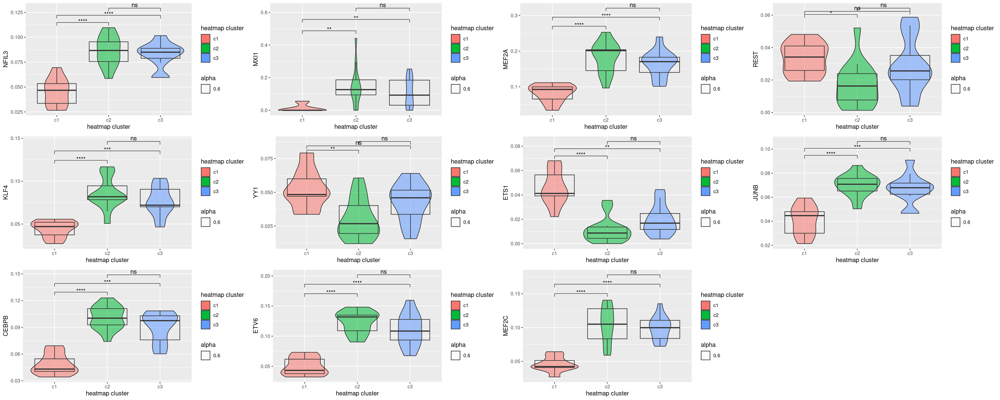
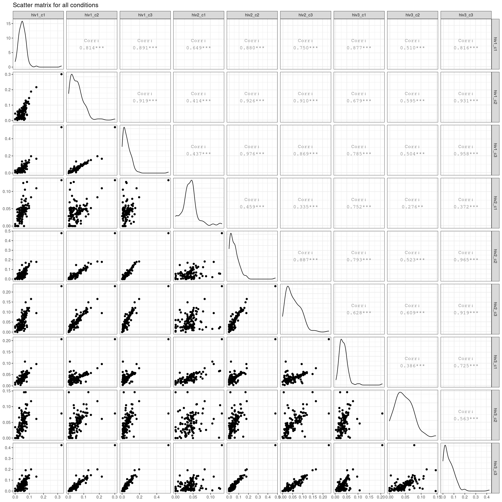
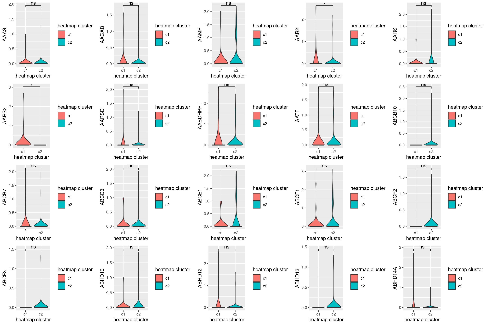

TF activity in Myeloid2 cells
Katharina Mikulik
Last updated: 2021-12-31
Checks: 6 1
Knit directory: report/
This reproducible R Markdown analysis was created with workflowr (version 1.6.2). The Checks tab describes the reproducibility checks that were applied when the results were created. The Past versions tab lists the development history.
The R Markdown file has unstaged changes. To know which version of the R Markdown file created these results, you’ll want to first commit it to the Git repo. If you’re still working on the analysis, you can ignore this warning. When you’re finished, you can run wflow_publish to commit the R Markdown file and build the HTML.
Great job! The global environment was empty. Objects defined in the global environment can affect the analysis in your R Markdown file in unknown ways. For reproduciblity it’s best to always run the code in an empty environment.
The command set.seed(20211203) was run prior to running the code in the R Markdown file. Setting a seed ensures that any results that rely on randomness, e.g. subsampling or permutations, are reproducible.
Great job! Recording the operating system, R version, and package versions is critical for reproducibility.
Nice! There were no cached chunks for this analysis, so you can be confident that you successfully produced the results during this run.
Great job! Using relative paths to the files within your workflowr project makes it easier to run your code on other machines.
Great! You are using Git for version control. Tracking code development and connecting the code version to the results is critical for reproducibility.
The results in this page were generated with repository version 3d3c733. See the Past versions tab to see a history of the changes made to the R Markdown and HTML files.
Note that you need to be careful to ensure that all relevant files for the analysis have been committed to Git prior to generating the results (you can use wflow_publish or wflow_git_commit). workflowr only checks the R Markdown file, but you know if there are other scripts or data files that it depends on. Below is the status of the Git repository when the results were generated:
Ignored files:
Ignored: analysis/Independent_cell_type_identification_Farhadian_dataset_cache/
Ignored: analysis/Triculture_csf_integration_cache/
Untracked files:
Untracked: README.html
Untracked: analysis/Triculture_csf_integration/
Untracked: data/triculture_seurat_object
Untracked: rebuild file.Rmd
Untracked: rebuild-file.Rmd
Untracked: rebuild-file.html
Untracked: rebuild-file_cache/
Untracked: rebuild-file_files/
Unstaged changes:
Modified: README.md
Modified: analysis/Methods.Rmd
Modified: analysis/TF_activity_analysis_of_myeloid2_cluster.Rmd
Note that any generated files, e.g. HTML, png, CSS, etc., are not included in this status report because it is ok for generated content to have uncommitted changes.
These are the previous versions of the repository in which changes were made to the R Markdown (analysis/TF_activity_analysis_of_myeloid2_cluster.Rmd) and HTML (docs/TF_activity_analysis_of_myeloid2_cluster.html) files. If you’ve configured a remote Git repository (see ?wflow_git_remote), click on the hyperlinks in the table below to view the files as they were in that past version.
| File | Version | Author | Date | Message |
|---|---|---|---|---|
| html | 3d3c733 | Katharina782 | 2021-12-31 | Build site. |
| Rmd | 552f3e7 | Katharina782 | 2021-12-31 | wflow_publish(c(“analysis/Triculture_csf_integration.Rmd,” “analysis/Discussion.Rmd,” |
| html | d0fdb76 | Katharina782 | 2021-12-30 | Build site. |
| Rmd | cae354b | Katharina782 | 2021-12-30 | wflow_publish(all = TRUE, republish = TRUE, delete_cache = TRUE) |
| html | cae354b | Katharina782 | 2021-12-30 | wflow_publish(all = TRUE, republish = TRUE, delete_cache = TRUE) |
| html | 80ac62c | Katharina782 | 2021-12-29 | Build site. |
| Rmd | f52af64 | Katharina782 | 2021-12-29 | wflow_publish(“analysis/TF_activity_analysis_of_myeloid2_cluster.Rmd”) |
| html | 793e3ad | Katharina782 | 2021-12-28 | Build site. |
| Rmd | dacae75 | Katharina782 | 2021-12-28 | wflow_publish(“analysis/TF_activity_analysis_of_myeloid2_cluster.Rmd”) |
| html | 6c5f3b1 | Katharina782 | 2021-12-27 | Build site. |
| Rmd | d2f59b2 | Katharina782 | 2021-12-27 | wflow_publish(all = TRUE, republish = TRUE, delete_cache = TRUE) |
| html | d2f59b2 | Katharina782 | 2021-12-27 | wflow_publish(all = TRUE, republish = TRUE, delete_cache = TRUE) |
| html | d85a631 | Katharina782 | 2021-12-22 | Build site. |
| Rmd | fdf25ce | Katharina782 | 2021-12-22 | wflow_publish(all = TRUE, republish = TRUE, delete_cache = TRUE) |
| html | bdbb921 | Katharina782 | 2021-12-21 | Build site. |
| Rmd | efc0f94 | Katharina782 | 2021-12-21 | wflow_publish(c(“analysis/TF_activity_analysis_of_myeloid2_cluster.Rmd,” |
| html | 9597c36 | Katharina782 | 2021-12-21 | Build site. |
| Rmd | ea7e899 | Katharina782 | 2021-12-20 | wflow_publish(all = TRUE, republish = TRUE, delete_cache = TRUE) |
| html | 40651d9 | Katharina782 | 2021-12-20 | Build site. |
| Rmd | f94eb8c | Katharina782 | 2021-12-20 | wflow_publish(“analysis/TF_activity_analysis_of_myeloid2_cluster.Rmd,” |
| html | 436b5c2 | Katharina782 | 2021-12-20 | Build site. |
| html | 7f7db3c | Katharina782 | 2021-12-19 | Build site. |
| Rmd | bb965a8 | Katharina782 | 2021-12-19 | wflow_publish(“analysis/TF_activity_analysis_of_myeloid2_cluster.Rmd”) |
| html | eb137dd | Katharina782 | 2021-12-19 | Build site. |
| Rmd | 91e34e2 | Katharina782 | 2021-12-19 | wflow_publish(“analysis/TF_activity_analysis_of_myeloid2_cluster.Rmd”) |
| html | fce26d5 | Katharina782 | 2021-12-18 | Build site. |
| html | 2a95e92 | Katharina782 | 2021-12-18 | Build site. |
| html | fec6c6e | Katharina782 | 2021-12-17 | Build site. |
| Rmd | e5e16d2 | Katharina782 | 2021-12-17 | wflow_publish(files = rmd) |
| html | 5bb4124 | Katharina782 | 2021-12-16 | Build site. |
| Rmd | 5d4419e | Katharina782 | 2021-12-16 | wflow_publish(c("analysis/_site.yml“,”analysis/index.Rmd“,”analysis/references.bib", |
| html | 183077b | Katharina782 | 2021-12-16 | Build site. |
| Rmd | 5509977 | Katharina782 | 2021-12-16 | wflow_publish(“analysis/TF_activity_analysis_of_myeloid2_cluster.Rmd”) |
| Rmd | dde1097 | Katharina782 | 2021-12-10 | recent updates |
| html | dde1097 | Katharina782 | 2021-12-10 | recent updates |
knitr::opts_chunk$set(echo = TRUE, collapse = TRUE, message = FALSE,
cache = FALSE, autodep = TRUE)library(tidyverse)
library(Seurat)
library(edgeR)
library(Matrix)
library(data.table)
library(ggplot2)
library(dplyr)
library(ggrepel)
#library(harmony)
library(RColorBrewer)
library(pheatmap)
library(ggcorrplot)
library(ComplexHeatmap)
library(circlize)
library(ggpubr)
library(gridExtra)
library(knitr)
library(ggVennDiagram)
library(corrplot)
library(rstatix)
# "Multitasking/Multiprocessing"
library(future)
#plan("multisession", workers = 24)GRN inference with Scenic
Using Scenic we tried to infer Gene regulatory networks from the gene expression data. The output is a matrix of TF (Transcription Factor) activity per cell. The input matrix for SCENIC included the 10,000 most highly variable genes of the Myeloid2 cell cluster. The resulting activity matrix contains activity scores of 125 different transcription factors.
First, we wanted to see if we can identify patterns in the TF activity in the Myeloid2 cells. We compared the TF activity to TFs shown to have differential binding scores between three infection states (uninfected, latent infection, active infection) in primary microglia (bulk ATACseq). For the comparison with the TF activity in Myeloid2 cells we focused on the TF with differential binding scores between uninfected and latently infected states.
The question we wanted to answer is: Can we see patterns of increased/decreased TF activity in Myeloid2 cells that correlate with the binding scores between infection states in primary microglia?
TF activity matrix and HIV CSF/Blood dataset
- read in Seurat object
hiv7 <- readRDS("/media/ag-cherrmann/kmikulik/HIV_microglia/src/Reproduce_Farhadian_Paper/Seurat_objects/total_7_samples_label_transfer.rds")
hiv4 <- readRDS("/media/ag-cherrmann/kmikulik/HIV_microglia/src/Reproduce_Farhadian_Paper/Seurat_objects/non_integrated_HIV1_HIV2_4samples_seurat_object.rds")- read in AuCell matrix (output from Scenic)
auc_mtx <- read.table("/media/ag-cherrmann/kmikulik/HIV_microglia/data/aucell_matrix_10k_hvg.tsv", sep = "\t")
auc_mtx %>% head %>% kable(caption = "TF activity matrix (output from SCENIC)")| AHR | ATF3 | BACH1 | BCL11A | BCL6 | BHLHE40 | BPTF | CEBPB | CEBPD | CEBPE | CEBPG | CLOCK | CREB1 | CREB5 | CTCF | CUX1 | DDIT3 | E2F2 | E2F3 | EGR1 | EGR3 | ELF1 | ELF2 | EOMES | ETS1 | ETS2 | ETV2 | ETV3 | ETV5 | ETV6 | FLI1 | FOS | FOSB | FOSL2 | FOXN3 | FOXO3 | FOXO4 | FOXP1 | FOXP3 | GABPA | GATA2 | GATA3 | GMEB1 | GMEB2 | HDX | HIVEP1 | HMGA2 | HOXA9 | IKZF3 | IRF1 | IRF2 | IRF4 | IRF7 | IRF8 | JUN | JUNB | KLF10 | KLF12 | KLF4 | KLF5 | KLF6 | KLF9 | LEF1 | MAF | MAFB | MAFF | MAFG | MBD1 | MBD4 | MEF2A | MEF2C | MEF2D | MGA | MITF | MXI1 | MYB | MYBL1 | MYC | NFATC2 | NFE2 | NFE2L2 | NFIL3 | NR1H3 | PAX5 | PBX3 | PRDM1 | REL | REST | RFX2 | RORA | RUNX1 | RXRA | SETDB1 | SOX13 | SOX4 | SOX5 | SP3 | SP4 | SPI1 | SPIB | STAT1 | STAT3 | STAT4 | STAT6 | TBX19 | TBX21 | TCF12 | TCF7 | TEF | TFAP4 | VEZF1 | XBP1 | YY1 | ZBTB33 | ZIK1 | ZKSCAN7 | ZNF133 | ZNF143 | ZNF234 | ZNF263 | ZNF354B | ZNF420 | ZNF502 | ZNF721 | ZSCAN30 | |
|---|---|---|---|---|---|---|---|---|---|---|---|---|---|---|---|---|---|---|---|---|---|---|---|---|---|---|---|---|---|---|---|---|---|---|---|---|---|---|---|---|---|---|---|---|---|---|---|---|---|---|---|---|---|---|---|---|---|---|---|---|---|---|---|---|---|---|---|---|---|---|---|---|---|---|---|---|---|---|---|---|---|---|---|---|---|---|---|---|---|---|---|---|---|---|---|---|---|---|---|---|---|---|---|---|---|---|---|---|---|---|---|---|---|---|---|---|---|---|---|---|---|---|---|---|---|
| U1_AACGGTCTACAA | 0.0435556 | 0.0523006 | 0.0502414 | 0.0652398 | 0.0000000 | 0.0074783 | 0.0129231 | 0.0490091 | 0.0505306 | 0.0000000 | 0.0686000 | 0.0000 | 0.0270270 | 0.1120000 | 0.0121304 | 0.0617534 | 0.0343587 | 0.0195325 | 0.0462857 | 0.0342381 | 0.0386753 | 0.0413333 | 0.0897273 | 0.0105820 | 0.0096548 | 0.0586475 | 0.0220 | 0.0251111 | 0.0753957 | 0.0793378 | 0.0116645 | 0.0559574 | 0.0447588 | 0.0292139 | 0.0000000 | 0.0355259 | 0.0652308 | 0.0046154 | 0.0000000 | 0.0080769 | 0.0525283 | 0.02280 | 0.0000000 | 0.0000 | 0.0598 | 0.0464 | 0.0000000 | 0.0307059 | 0.01304 | 0.0291937 | 0.0328387 | 0.0648571 | 0.0638710 | 0.0669279 | 0.0536981 | 0.0451377 | 0.0057468 | 0.02936 | 0.0642699 | 0.0000000 | 0.0427604 | 0.00000 | 0.0000000 | 0.00000 | 0.0552796 | 0.0276386 | 0.0355833 | 0.0000000 | 0.0760000 | 0.0913770 | 0.0526324 | 0.0000000 | 0.0000000 | 0.0532381 | 0.00000 | 0.0123636 | 0.0136848 | 0.0000000 | 0.0311915 | 0.0352090 | 0.0053898 | 0.0503357 | 0.0686667 | 0.0423636 | 0.1161538 | 0.0162290 | 0.0726425 | 0.0185217 | 0 | 0.0000 | 0.0443077 | 0.0439688 | 0.1188571 | 0.0000 | 0.0682963 | 0.0000000 | 0.0502623 | 0.0013671 | 0.0510571 | 0.0573205 | 0.0407797 | 0.0506569 | 0.0000 | 0.0450769 | 0.1448333 | 0.0101270 | 0.0494615 | 0.0092346 | 0.0492222 | 0.000 | 0.0922857 | 0.0191852 | 0.0174412 | 0.0847778 | 0.0000000 | 0.0000 | 0 | 0.0463636 | 0 | 0.0000 | 0.0000000 | 0.000 | 0.0000000 | 0.0000000 | 0.0000000 |
| U1_GGTGAATCTAGC | 0.1788889 | 0.0203043 | 0.0187299 | 0.0189825 | 0.0256667 | 0.0072754 | 0.0268462 | 0.0198003 | 0.0201004 | 0.0203556 | 0.0155636 | 0.0000 | 0.0150270 | 0.0000000 | 0.0117391 | 0.0396438 | 0.0092735 | 0.0290130 | 0.0181905 | 0.0000000 | 0.0209351 | 0.0263590 | 0.0490000 | 0.0368042 | 0.0253690 | 0.0221786 | 0.0000 | 0.0241111 | 0.0188426 | 0.0188829 | 0.0217290 | 0.0204197 | 0.0150161 | 0.0254451 | 0.0000000 | 0.0361333 | 0.0298462 | 0.0484615 | 0.1257778 | 0.0169487 | 0.0153962 | 0.02680 | 0.0816364 | 0.2125 | 0.0000 | 0.0000 | 0.0000000 | 0.0000000 | 0.04440 | 0.0156634 | 0.0185054 | 0.0000000 | 0.0123623 | 0.0188840 | 0.0215547 | 0.0202077 | 0.0201013 | 0.01744 | 0.0293006 | 0.0000000 | 0.0197812 | 0.00000 | 0.0179167 | 0.00000 | 0.0278817 | 0.0081928 | 0.0142292 | 0.0000000 | 0.0437391 | 0.0297705 | 0.0332794 | 0.0300000 | 0.0173939 | 0.0332143 | 0.00000 | 0.0384545 | 0.0299758 | 0.0018462 | 0.0179574 | 0.0080226 | 0.0354915 | 0.0252494 | 0.0353333 | 0.0000000 | 0.0000000 | 0.0247634 | 0.0278964 | 0.0397971 | 0 | 0.0308 | 0.0056923 | 0.0126719 | 0.0000000 | 0.0000 | 0.0000000 | 0.0000000 | 0.0440328 | 0.0201266 | 0.0196625 | 0.0227436 | 0.0088405 | 0.0178175 | 0.0000 | 0.0000000 | 0.0296667 | 0.0179365 | 0.0000000 | 0.0280741 | 0.0731111 | 0.036 | 0.0000000 | 0.0115000 | 0.0203088 | 0.0000000 | 0.0000000 | 0.0000 | 0 | 0.0160909 | 0 | 0.0000 | 0.0960000 | 0.048 | 0.0000000 | 0.0000000 | 0.0000000 |
| U1_TTCAGATACCTA | 0.0573333 | 0.0138701 | 0.0158276 | 0.0121696 | 0.0000000 | 0.0334783 | 0.0559615 | 0.0119481 | 0.0141201 | 0.0000000 | 0.0238000 | 0.0930 | 0.0261622 | 0.0000000 | 0.0358261 | 0.0132329 | 0.0151390 | 0.0073506 | 0.0000000 | 0.0186190 | 0.0214026 | 0.0410256 | 0.0061818 | 0.0535344 | 0.0255714 | 0.0135694 | 0.0000 | 0.0240667 | 0.0183745 | 0.0116388 | 0.0141548 | 0.0166328 | 0.0164309 | 0.0270751 | 0.0445714 | 0.0169333 | 0.0397692 | 0.0020000 | 0.1806667 | 0.0304359 | 0.0322642 | 0.00000 | 0.0000000 | 0.0000 | 0.0000 | 0.0000 | 0.0000000 | 0.0000000 | 0.04236 | 0.0189472 | 0.0147312 | 0.0000000 | 0.0100099 | 0.0148056 | 0.0178491 | 0.0095801 | 0.0039747 | 0.07088 | 0.0155092 | 0.0000000 | 0.0051563 | 0.00650 | 0.0273333 | 0.10600 | 0.0089032 | 0.0136546 | 0.0263125 | 0.0130000 | 0.0492174 | 0.0169180 | 0.0167059 | 0.0684286 | 0.0362424 | 0.0278095 | 0.00000 | 0.0000000 | 0.0367879 | 0.0107179 | 0.0468936 | 0.0132542 | 0.0587797 | 0.0143077 | 0.0000000 | 0.0174545 | 0.0000000 | 0.0299542 | 0.0114197 | 0.0090435 | 0 | 0.0000 | 0.0612308 | 0.0077344 | 0.0000000 | 0.0000 | 0.0019259 | 0.1536667 | 0.0446885 | 0.0077975 | 0.0147593 | 0.0084872 | 0.0097975 | 0.0115693 | 0.0892 | 0.0000000 | 0.0000000 | 0.0607302 | 0.0072308 | 0.0133580 | 0.0000000 | 0.013 | 0.0000000 | 0.0271296 | 0.0281618 | 0.0000000 | 0.0000000 | 0.1228 | 0 | 0.0174545 | 0 | 0.1128 | 0.0000000 | 0.000 | 0.0000000 | 0.0000000 | 0.0796667 |
| U1_GGCATAGGATTN | 0.1244444 | 0.1293581 | 0.0819425 | 0.0657368 | 0.0400000 | 0.0114493 | 0.0077308 | 0.0926018 | 0.1091048 | 0.0180000 | 0.1254909 | 0.0000 | 0.0475135 | 0.4828889 | 0.0000000 | 0.0292055 | 0.1213901 | 0.0327273 | 0.0000000 | 0.0739524 | 0.1063896 | 0.1273333 | 0.0647273 | 0.0040952 | 0.0071310 | 0.1326794 | 0.0000 | 0.0471556 | 0.1554809 | 0.0968227 | 0.0690581 | 0.0880918 | 0.0726302 | 0.1370058 | 0.1240000 | 0.1585630 | 0.0671538 | 0.0064615 | 0.0313333 | 0.0155897 | 0.0352075 | 0.01520 | 0.0061818 | 0.0685 | 0.0840 | 0.0586 | 0.0000000 | 0.0742353 | 0.02352 | 0.0468180 | 0.0541613 | 0.2425714 | 0.0707246 | 0.0723668 | 0.1212604 | 0.0766998 | 0.0190886 | 0.00000 | 0.0873497 | 0.0022222 | 0.0876042 | 0.00000 | 0.0044167 | 0.36125 | 0.0980753 | 0.0853976 | 0.1486042 | 0.0130000 | 0.0552174 | 0.2110984 | 0.1282794 | 0.1105714 | 0.0000000 | 0.1315000 | 0.27325 | 0.0651818 | 0.0159758 | 0.0048718 | 0.0324255 | 0.0679774 | 0.0818644 | 0.0885408 | 0.0624444 | 0.1314545 | 0.0038462 | 0.1265191 | 0.1317409 | 0.0135652 | 0 | 0.0000 | 0.0283077 | 0.0450938 | 0.0000000 | 0.0000 | 0.1118519 | 0.0000000 | 0.0568852 | 0.0008608 | 0.0829198 | 0.0460000 | 0.0639190 | 0.0423285 | 0.0934 | 0.0390769 | 0.0423333 | 0.0082063 | 0.0000000 | 0.0157037 | 0.0717778 | 0.000 | 0.0000000 | 0.0190556 | 0.0344706 | 0.0838889 | 0.1400000 | 0.0000 | 0 | 0.0663636 | 0 | 0.0000 | 0.1056667 | 0.000 | 0.0744444 | 0.0000000 | 0.0000000 |
| U1_TTCTAAAGTCTA | 0.0262222 | 0.0120705 | 0.0176839 | 0.0272749 | 0.0000000 | 0.0042029 | 0.0332692 | 0.0213333 | 0.0225808 | 0.0135111 | 0.0295273 | 0.1440 | 0.0129189 | 0.0000000 | 0.0985652 | 0.0113699 | 0.0183318 | 0.0044935 | 0.0000000 | 0.0233333 | 0.0223117 | 0.0271282 | 0.0120909 | 0.0509418 | 0.0434762 | 0.0259394 | 0.0000 | 0.0376222 | 0.0179830 | 0.0207090 | 0.0259226 | 0.0181836 | 0.0114791 | 0.0159191 | 0.0000000 | 0.0143407 | 0.0000000 | 0.0556923 | 0.0417778 | 0.0407179 | 0.0106415 | 0.05352 | 0.0000000 | 0.0000 | 0.1724 | 0.0000 | 0.0007273 | 0.0000000 | 0.02088 | 0.0189746 | 0.0115484 | 0.0000000 | 0.0119702 | 0.0170439 | 0.0200453 | 0.0157336 | 0.0041772 | 0.05496 | 0.0173865 | 0.0000000 | 0.0122188 | 0.11475 | 0.0830000 | 0.01300 | 0.0150645 | 0.0128996 | 0.0041875 | 0.0391667 | 0.0513913 | 0.0299672 | 0.0221471 | 0.0330000 | 0.0547273 | 0.0411429 | 0.10400 | 0.0000000 | 0.0525455 | 0.0000000 | 0.0289362 | 0.0145198 | 0.0231864 | 0.0221725 | 0.0000000 | 0.0000000 | 0.0000000 | 0.0481221 | 0.0161347 | 0.0489855 | 0 | 0.0000 | 0.0355385 | 0.0190781 | 0.0000000 | 0.0000 | 0.0545926 | 0.1063333 | 0.0186230 | 0.0428354 | 0.0194425 | 0.0194744 | 0.0168101 | 0.0198175 | 0.0000 | 0.0000000 | 0.0303333 | 0.0217778 | 0.0678462 | 0.0388642 | 0.0364444 | 0.115 | 0.0385714 | 0.0248148 | 0.0214559 | 0.0822222 | 0.0000000 | 0.0000 | 0 | 0.0333636 | 0 | 0.0000 | 0.1436667 | 0.084 | 0.0000000 | 0.0893333 | 0.0000000 |
| U1_CTGCCCTGAGTC | 0.0000000 | 0.0148609 | 0.0131954 | 0.0070117 | 0.0000000 | 0.0393043 | 0.0351154 | 0.0138054 | 0.0143690 | 0.0000000 | 0.0150364 | 0.0804 | 0.0340000 | 0.0095556 | 0.0586522 | 0.0250685 | 0.0064036 | 0.0308052 | 0.0184762 | 0.0250952 | 0.0087532 | 0.0353333 | 0.0000000 | 0.0500952 | 0.0140714 | 0.0180128 | 0.0232 | 0.0530889 | 0.0171149 | 0.0125619 | 0.0270581 | 0.0180000 | 0.0187588 | 0.0188439 | 0.0000000 | 0.0017037 | 0.0000000 | 0.0100000 | 0.0000000 | 0.0307692 | 0.0092830 | 0.06296 | 0.0020000 | 0.0000 | 0.0000 | 0.0000 | 0.0000000 | 0.0180000 | 0.05020 | 0.0185871 | 0.0163118 | 0.0000000 | 0.0130074 | 0.0095110 | 0.0145057 | 0.0148623 | 0.0080000 | 0.04872 | 0.0194969 | 0.0373333 | 0.0230104 | 0.00000 | 0.0295833 | 0.05550 | 0.0157527 | 0.0111004 | 0.0061458 | 0.0466667 | 0.0000000 | 0.0100492 | 0.0020588 | 0.0000000 | 0.0218788 | 0.0015714 | 0.05550 | 0.0412727 | 0.0340970 | 0.0119744 | 0.0338723 | 0.0055367 | 0.0148136 | 0.0114452 | 0.0000000 | 0.0000000 | 0.0552308 | 0.0456489 | 0.0018238 | 0.0165217 | 0 | 0.1132 | 0.0356923 | 0.0044687 | 0.0000000 | 0.0765 | 0.0324444 | 0.0000000 | 0.0351148 | 0.0371392 | 0.0120281 | 0.0013718 | 0.0142076 | 0.0101606 | 0.0000 | 0.0000000 | 0.0000000 | 0.0205397 | 0.0065385 | 0.0208148 | 0.0000000 | 0.000 | 0.0000000 | 0.0094074 | 0.0346471 | 0.0000000 | 0.0073333 | 0.0000 | 0 | 0.0000000 | 0 | 0.0756 | 0.0000000 | 0.062 | 0.0000000 | 0.0000000 | 0.1450000 |
- Combine AuCell Matrix and Seurat object
# add auc matrix to metadata of hiv4 seurat object
hiv7_scenic <- AddMetaData(hiv7,
metadata = auc_mtx,
col.name = colnames(auc_mtx))Bulk ATACseq footprinting
Using bulk ATACseq data from the C20 cell line (immortalized microglia) with three different conditions, active infection, latent infection, uninfected, differential binding scores were obtained using TOBIAS. Here, I will use the TFs which were previously shown to have differential binding scores in these primary microglia. Since I expect the CSF Myeloid cells to be latently infected, because they have been obtained from patients receiving ART, I will use the TFs with differential binding scores between latent infection and uninfected. We would like to know if the TF activity inferred from RNAseq data of Myeloid2 cells correlates with these differential binding scores. In other words, we want to know if the patterns of differential TF activity are similar to the patterns of differential TF binding scores. For example, if a TF was shown to be more bound in latently infected primary microglia compared to uninfected primary microglia, we would expect the TF to be more active in a group of Myeloid2 cells which are latently infected compared to a group of Myeloid2 cells which are uninfected.
Comparing the TFs from the TF activity matrix with the differentially bound TFs from the footprinting, twentyfour of the TFs overlap.
Using less than 10,000 most highly variable genes as an input matrix for SCENIC resulted in a lower number of TFs which overlap. Increasing the number of input features for SCENIC increased the number of TFs included in the TF activity matrix. Therefore, 10,000 most highly variable genes were used.
# read in dataframe containing differntial binding scores between conditions
#
# red = latently infected
# gfp = active infected
# uninfected
tfs_ana <- read.table("/media/ag-cherrmann/projects/06_HIV_Microglia/data/atacseq/data-2020-11-06/tobias/TOBIAS_snakemake/footprint_mglia2_GlassTF_17-03/TFBS/bindetect_results.txt", sep = "\t", header = TRUE)
# filter TFs with significant p values between latent infection and uninfected
# I decided to use a threshold of p-value < 1e-50, because due to the large number
# of data, all p-values will be very high
top_tfs <- tfs_ana %>% filter(uninf_red_pvalue < 1e-50)
# keep only the TFs in the dataframe which overlap between the two datasets.
overlap_atac <- top_tfs %>% filter(name %in% colnames(auc_mtx))
# extract names of TFs more bound in either condition
up_latent <- overlap_atac$name[overlap_atac$uninf_red_change < 0]
up_uninf <- overlap_atac$name[overlap_atac$uninf_red_change > 0]Volcano Plot ATAC-seq footprinting
Only four TFs found in the TF activity matrix of Myeloid2 cells are more bound in latent infection than in uninfected primary microglia.
top_tfs %>%
# add a column containing information in which condition the corresponding TF
# is upregulated
mutate(condition = ifelse(uninf_red_change < 0, "up_latent", "up_uninf")) %>%
# add a column conaining the labels for the plot
# I only want to label cells which are also found by Scenic
mutate(label = ifelse(name %in% overlap_atac$name, name, NA)) %>%
ggplot(aes(x = uninf_red_change,
y = -log10(uninf_red_pvalue),
col = condition,
label = label)) +
geom_point() +
geom_hline(yintercept = -log10(1e-50), col = "red") +
geom_text(nudge_x = .05, nudge_y = 2) +
labs(title = "TFs with differential binding scores") +
ylab("-log10(p_value)") +
xlab("differential binding score")
Warning: Removed 51 rows containing missing values (geom_text).
| Version | Author | Date |
|---|---|---|
| d0fdb76 | Katharina782 | 2021-12-30 |
| 80ac62c | Katharina782 | 2021-12-29 |
| 40651d9 | Katharina782 | 2021-12-20 |
| 436b5c2 | Katharina782 | 2021-12-20 |
| 7f7db3c | Katharina782 | 2021-12-19 |
| eb137dd | Katharina782 | 2021-12-19 |
| fce26d5 | Katharina782 | 2021-12-18 |
| 2a95e92 | Katharina782 | 2021-12-18 |
| 5bb4124 | Katharina782 | 2021-12-16 |
| 183077b | Katharina782 | 2021-12-16 |
| dde1097 | Katharina782 | 2021-12-10 |
Compare TF activities between clusters and look for patterns
Judging from the heatmaps below no TFs clearly separate the clusters or show a pattern of activity which is similar to the footprinting binding scores. If the pattern was similar to the footprinting binding scores we would expect to see one cluster where REST, KLF4, PAX5 and MXI1 are upregulated. This cannot be seen in the plots below.
Split Heatmap into 3 separate heatmaps according to the different patients
all 125 TFs
# TF annotations
la <- rowAnnotation(type_TF =
case_when(colnames(auc_mtx) %in% up_latent ~ "up_latent",
colnames(auc_mtx) %in% up_uninf ~ "up_uninf",
TRUE ~"unknown"),
name = "type_TF",
col = list(type_TF = c("up_latent" = "red",
"up_uninf" = "pink",
"unknown" = "forestgreen")))
# 3 heatmaps with all Scenic TFs
ht_list <- map(seq.int(1:3), function(n) {
patients <- c ("HIV1_CSF", "HIV2_CSF", "HIV3_CSF") # 3 different patients
# filter the dataset for only Myeloid2 cells and iteratively one of the patients
df <- hiv7@meta.data %>% filter(cell_type == "Myeloid2",
orig.ident == patients[n])
# select only the cells of the activity matrix which are myeloid2 and the correct patient
mtx <- auc_mtx[rownames(auc_mtx) %in% rownames(df),]
# heatmap
ht <- Heatmap(t(mtx),
column_title = paste0("patient: ", patients[n]),
column_km = 3,
#row_km = n,
show_column_names = FALSE,
col =colorRampPalette(rev(brewer.pal(n = 7, name = "RdYlBu")))(100),
show_row_names = TRUE
)
#top_annotation = column_annotation)
list(name = patients[n], heatmap = ht)
})
ht_list[[1]]$heatmap + ht_list[[2]]$heatmap + ht_list[[3]]$heatmap + la
24 TFs found by ATAC-seq footprinting
# 3 heatmaps, but only the TFs which overlap with Anas analysis
ht_list <- map(seq.int(1:3), function(n) {
patients <- c ("HIV1_CSF", "HIV2_CSF", "HIV3_CSF") # 3 different patients
# filter the dataset for only Myeloid2 cells and iteratively one of the patients
df <- hiv7@meta.data %>% filter(cell_type == "Myeloid2",
orig.ident == patients[n])
# select only the cells of the activity matrix which are myeloid2 and the correct patient
# select TFs which overlap with Anas analysis
mtx <- auc_mtx[rownames(auc_mtx) %in% rownames(df), overlap_atac$name]
# heatmap
ht <- Heatmap(t(mtx),
column_title = paste0("patient: ", patients[n]),
column_km = 3,
#row_km = n,
show_column_names = FALSE,
col =colorRampPalette(rev(brewer.pal(n = 7, name = "RdYlBu")))(100),
right_annotation = rowAnnotation(type_TF = ifelse(colnames(auc_mtx[,overlap_atac$name]) %in% up_latent, "up_latent", "up_uninf"),
name = "type_TF",
col = list(type_TF = c("up_latent" = "red",
"up_uninf" = "pink"))))
list(name = patients[n], heatmap = ht)
})
ht_list = ht_list[[1]]$heatmap + ht_list[[2]]$heatmap + ht_list[[3]]$heatmap
draw(ht_list, ht_gap = unit(1, "cm"))
Different approaches
The next idea was to cluster the Myeloid2 cells based on their TF activity using k-means clustering. To do this I performed k-means clustering on Myeloid2 cells from patient one (HIV1_CSF) with k=3/4/5. The reason why I used only patient one was that the other two patients might be used for validation of the clustering later on. If the clusters have a biological meaning, it should be possible to transfer the clusters onto the Myeloid2 cells from patient2 (HIV2_CSF) and patient3 (HIV3_CSF). If the clusters also separate the Myeloid2 cells of the other two patients in an interpretable and meaningful way this would validate that there is a biological meaning behind the clusters.
However, as we will see the label transfer of the cluster identities did not work, probably due to the small sample size. There are only 146 in total in the Myeloid2 cluster of infected patients.
The alternative strategy was to perform independent k-means clustering across all patients and compare the TF activities between clusters. Can we find TF activities which differentiate clusters across patients and find correlations between clusters across patients?
- Determine k for k-means k-means clustering
- Transfer the cluster identities to patient2 and patient3
- K-means Clustering for all 3 patients separately
1. Determine k
The plot of within cluster sum of squares shows that the sweet spot for the value of k is somewhere between 3 and 5. To determine the best k for k-means clustering k = 3, k = 4 and k = 5 were tried and the different outcomes compared. Since k = 4 and k = 5 does not yield an increased number of TFs which differentiate the different clusters and, therefore, do not add any insights we proceeded with k = 3 in the following analysis.
df <- hiv7@meta.data %>% filter(cell_type == "Myeloid2",
orig.ident == "HIV1_CSF")
mtx <- auc_mtx[rownames(auc_mtx) %in% rownames(df), ]
# Decide on a k for clustering
wss = sapply(2:15, function(k) {
kmeans(x = t(mtx), centers = k)$tot.withinss
})
plot(2:15, wss, type = "b",
xlab = "Number of clusters k",
ylab = "Total within-clusters sum of square")
The results of using differnet k can be seen below. Click on the tabs to see heatmaps of the k-means clustering, as well as statistical test on different TF acitivities between clusters.
k-means Clustering with k = 3
Heatmap for patient 1
#map(seq.int(1:5), function(k){
df <- hiv7@meta.data %>% filter(cell_type == "Myeloid2",
orig.ident == "HIV1_CSF")
# select only the cells of the activity matrix which are myeloid2 and the correct patient
mtx <- auc_mtx[rownames(auc_mtx) %in% rownames(df), ]
# heatmap
set.seed(123)
ht_pat1 <-draw(Heatmap(t(mtx),
column_title = "Myeloid2 cells from patient 1, k = 3",
column_km = 3,
column_km_repeats = 100,
show_column_names = FALSE,
col =colorRampPalette(rev(brewer.pal(n = 7, name = "RdYlBu")))(100),
right_annotation = la
))
#top_annotation = column_annotation) After performing k-means cluster we extract the cells from each cluster. In the table below you can see the number of cells in each cluster.
### Extract cells from each cluster
# if you draw the heatmap, the results of th eclustering will not change anymore
#png("/media/ag-cherrmann/kmikulik/HIV_microglia/analysis/Myeloid2_cluster/Myeloid2_3clusters.png", width = 15, height = 17, res = 1200)
#ht <- draw(ht_pat1)
# get the columns names of cluster one
c1 <- colnames(t(mtx[column_order(ht_pat1)[[1]],]))
#write.table(c1, "/media/ag-cherrmann/kmikulik/HIV_microglia/data/hiv1_cluster1.tsv", sep = "\t")
# get the column names of cluster two
c2 <- colnames(t(mtx[column_order(ht_pat1)[[2]],]))
#write.table(c2, "/media/ag-cherrmann/kmikulik/HIV_microglia/data/hiv1_cluster2.tsv", sep = "\t")
# get the column names of cluster 3
c3 <- colnames(t(mtx[column_order(ht_pat1)[[3]],]))
#write.table(c3, "/media/ag-cherrmann/kmikulik/HIV_microglia/data/hiv1_cluster3.tsv", sep = "\t")number of cells in each cluster
# summary staticstics
hiv7_scenic@meta.data %>%
rownames_to_column("cell") %>%
filter(orig.ident == "HIV1_CSF",
cell_type == "Myeloid2",
cell %in% c(c1,c2,c3))%>%
mutate(ht_cluster = case_when(cell %in% c1 ~ "c1",
cell %in% c2 ~ "c2",
cell %in% c3 ~ "c3")) %>%
group_by(ht_cluster) %>%
summarize(count = n()) %>%
kable(caption = "number of cells in each cluster")| ht_cluster | count |
|---|---|
| c1 | 15 |
| c2 | 23 |
| c3 | 34 |
Are there significant differences in TF activity between the three clusters?
The ANOVA test is parametric and assumes normally distributed data, while Kruskal-Wallis-Test compares the mean of one or more groups, but is non-parametric. Since the data is not normally distributed in this case, the Kruskal-Wallis-Test is more appropriate. The Null-Hypothesis of the Kruskal-Wallis-Test is that there is no difference between the groups.
Since the test is repeated 125 times, the p-values are adjusted with the FDR method. This methods is more powerful than more conservative methods, like Bonferroni, Holm or Hochberg.
Performing Kruskal-Wallis-Test to find differences between the three clusters in patient one yields 54 TFs of all 125 TFs which are differentially active between the three clusters(p-value < 0.05). Of the twentyfour TFs with differential binding scores in the C20 cell line, sixteen have significantly different activity between the clusters.
Now that it is known that there are significant differences between clusters, the next step is to identify which cluster/s are different from which other cluster/s.
Pairwise-Wilcox-Test is a non-parametric pairwise test. Again, because we repeat the test we will correct for multiple hypothesis testing using the FDR method. The results are shown in boxplots below.
Kruskal-Wallis-Test, p-value adjustment, posthoc tests
Kruskal-Wallis Test and p-value adjustments for all 125 TFs
# non-parametric alternative to ANOVA -> Kruskal_wallis test
k3_df <- hiv7_scenic@meta.data %>%
rownames_to_column("cell") %>%
filter(orig.ident == "HIV1_CSF",
cell_type == "Myeloid2",
cell %in% c(c1,c2,c3)) %>%
mutate(ht_cluster = ifelse(cell %in% c1, "c1", ifelse(cell %in% c2, "c2", "c3")))
# check all TFs
p_values <- map(seq.int(1:125), function(n){
tf <- colnames(auc_mtx)[n]
p_values <- unlist(kruskal.test(pull(k3_df[tf]) ~ ht_cluster, k3_df))["p.value"]
#list(tf = tf, p_value = p_values)
})
# plot distribution of p_values
hist(as.numeric(unname(unlist(p_values))),
main = "distribution of p_values",
xlab = "p_values",
breaks = 20)
| Version | Author | Date |
|---|---|---|
| d0fdb76 | Katharina782 | 2021-12-30 |
| 80ac62c | Katharina782 | 2021-12-29 |
| 9597c36 | Katharina782 | 2021-12-21 |
| 40651d9 | Katharina782 | 2021-12-20 |
| 436b5c2 | Katharina782 | 2021-12-20 |
| fce26d5 | Katharina782 | 2021-12-18 |
| 2a95e92 | Katharina782 | 2021-12-18 |
| 183077b | Katharina782 | 2021-12-16 |
| dde1097 | Katharina782 | 2021-12-10 |
# adjust for multiple testing with FDR
adj_p_values <- p.adjust(as.numeric(unname(unlist(p_values))), method = "fdr")
# how many transcription factors are significantly different between the clusters?
sign3 <- adj_p_values[adj_p_values<.05]
length(adj_p_values[adj_p_values<0.05])
[1] 64
# get TFs that are significantly different
hiv1_diff <- colnames(auc_mtx)[adj_p_values < .05]
#write.table(diff3, "/media/ag-cherrmann/kmikulik/HIV_microglia/data/total_TFs_differentially_active_in_HIV1")- Kruskal-Wallis test and p-value adjustment for 24 TFs also identified by ATAC-seq
# check 24 TFs with Kruskal Wallis test
p_values <- map(seq.int(1:24), function(n){
tf <- overlap_atac$name[n]
p_values <- unlist(kruskal.test(pull(k3_df[tf]) ~ ht_cluster, k3_df))["p.value"]
})
#sign_p_values <- p_values[p_values < 0.01]
# adjust for multiple hypothesis testing
adj_p_values <- p.adjust(as.numeric(unname(unlist(p_values))), method = "fdr")
# how many transcription factors are significantly different between the clusters?
length(adj_p_values[adj_p_values<0.05])
[1] 16
# get TFs that are differentially expressed
hiv1_atac <- overlap_atac$name[adj_p_values < .05]
#write.table(diff3_atac, "/media/ag-cherrmann/kmikulik/HIV_microglia/data/atac_TFs_differentially_active_in_HIV1")- Posthoc tests for k = 3
The posthoc test was performed for the 16 TFs with significantly different activity between the 3 clusters.
# We perform a posthoc test
#wilcox_list = list()
wilcox_list <- map(seq.int(1:length(hiv1_atac)), function(i){
tf <- hiv1_atac[i]
#print(tf)
wilcox <- pairwise.wilcox.test(pull(k3_df[tf]), pull(k3_df["ht_cluster"]),
p.adjust.method = "fdr")
list(TF = tf, wilcox = wilcox)
})
#length(wilcox_list)
#wilcox_listK-means clustering with k = 4
Heatmap for patient 1
#map(seq.int(1:5), function(k){
df <- hiv7@meta.data %>% filter(cell_type == "Myeloid2",
orig.ident == "HIV1_CSF")
# select only the cells of the activity matrix which are myeloid2 and the correct patient
mtx <- auc_mtx[rownames(auc_mtx) %in% rownames(df), ]
# heatmap
set.seed(123)
ht <- draw(Heatmap(t(mtx),
column_title = "Myeloid2 cells from patient 2, k = 4",
column_km = 4,
column_km_repeats = 100,
show_column_names = FALSE,
col =colorRampPalette(rev(brewer.pal(n = 7, name = "RdYlBu")))(100),
right_annotation = la
)) 
#top_annotation = column_annotation)
### Extract cells from each cluster of k = 4
# get the columns names of cluster one
cl1 <- colnames(t(mtx[column_order(ht)[[1]],]))
# get the column names of cluster two
cl2 <- colnames(t(mtx[column_order(ht)[[2]],]))
# get the column names of cluster 3
cl3 <- colnames(t(mtx[column_order(ht)[[3]],]))
cl4 <- colnames(t(mtx[column_order(ht)[[4]],]))# summary staticstics
hiv7_scenic@meta.data %>%
rownames_to_column("cell") %>%
filter(orig.ident == "HIV1_CSF",
cell_type == "Myeloid2",
cell %in% c(c1,c2,c3)) %>%
mutate(ht_cluster = case_when(cell %in% cl1 ~ "c1",
cell %in% cl2 ~ "c2",
cell %in% cl3 ~ "c3",
cell %in% cl4 ~ "c4")) %>%
group_by(ht_cluster) %>%
summarize(count = n()) %>%
kable(caption = "number of cells in each cluster")| ht_cluster | count |
|---|---|
| c1 | 8 |
| c2 | 22 |
| c3 | 21 |
| c4 | 21 |
Are there significant differences in TF activity between the four clusters?
Performing Kruskal-Wallis-Test to find differences between the four clusters in patient one yields 51 TFs of all 125 TFs which are differentially active between the three clusters(p-value < 0.05). Of the twentyfour TFs with differential binding scores in the C20 cell line, fourteen have significantly different activity between the clusters.
Now that it is known that there are significant differences between clusters, the next step is to identify which cluster/s are different from which other cluster/s. For this pairwise Wilcox test was used.
Kruskal-Wallis-Test, p-value adjustment, posthoc tests
- Kruskal-Wallis Test and p-value adjustments for all 125 TFs
k4_df <- hiv7_scenic@meta.data %>%
rownames_to_column("cell") %>%
filter(orig.ident == "HIV1_CSF",
cell_type == "Myeloid2",
cell %in% c(cl1,cl2,cl3,cl4)) %>%
mutate(ht_cluster = ifelse(cell %in% cl1, "cl1",
ifelse(cell %in% cl2, "cl2",
ifelse(cell %in% cl3, "cl3", "cl4"))))
# check all TFs
p_values <- map(seq.int(1:125), function(n){
tf <- colnames(auc_mtx)[n]
p_values <- unlist(kruskal.test(pull(k4_df[tf]) ~ ht_cluster, k4_df))["p.value"]
#list(tf = tf, p_value = p_values)
})
# adjust for multiple testing with FDR
adj_p_values <- p.adjust(as.numeric(unname(unlist(p_values))), method = "fdr")
# how many transcription factors are significantly different between the clusters?
sign <- adj_p_values[adj_p_values < 0.05]
length(adj_p_values[adj_p_values<0.05])
[1] 55
# get the TFs that are differentially expressed
diff4 <- colnames(auc_mtx)[adj_p_values < 0.05]
#write.table(diff4, "/media/ag-cherrmann/kmikulik/HIV_microglia/data/total_TFs_differentially_active_in_HIV1_k=4")- Kruskal-Wallis Test and p-value adjustments for 14 TFs with differential binding scores
# check 24 TFs with Kruskal Wallis test
p_values <- map(seq.int(1:24), function(n){
tf <- overlap_atac$name[n]
p_values <- unlist(kruskal.test(pull(k4_df[tf]) ~ ht_cluster, k4_df))["p.value"]
})
#sign_p_values <- p_values[p_values < 0.01]
# adjust for multiple hypothesis testing
adj_p_values <- p.adjust(as.numeric(unname(unlist(p_values))), method = "fdr")
# how many transcription factors are significantly different between the clusters?
length(adj_p_values[adj_p_values<0.05])
[1] 15
# get the TFs that are differentially expressed
diff4_atac <- overlap_atac$name[adj_p_values < .05]
#write.table(diff4_atac, "/media/ag-cherrmann/kmikulik/HIV_microglia/data/atac_TFs_differentially_active_in_HIV1_k=4")- Pairwise-Wilcox_Test for k = 4
Posthoc test for the 16 TFs with significantly different activity between the four clusters.
# We perform a posthoc test
#wilcox_list = list()
wilcox_list <- map(seq.int(1:length(diff4_atac)), function(i){
tf <- diff4_atac[i]
print(tf)
wilcox <- pairwise.wilcox.test(pull(k4_df[tf]), pull(k4_df["ht_cluster"]),
p.adjust.method = "fdr")
list(TF = tf, wilcox = wilcox)
})
[1] "NFIL3"
[1] "MXI1"
[1] "CREB1"
[1] "NFATC2"
[1] "MEF2A"
[1] "REST"
[1] "LEF1"
[1] "YY1"
[1] "MYB"
[1] "ETS1"
[1] "JUNB"
[1] "CEBPB"
[1] "CTCF"
[1] "ETV6"
[1] "MEF2C"
#length(wilcox_list)
#wilcox_listK-means Clustering with k = 5
Heatmap for patient 1
#map(seq.int(1:5), function(k){
df <- hiv7@meta.data %>% filter(cell_type == "Myeloid2",
orig.ident == "HIV1_CSF")
# select only the cells of the activity matrix which are myeloid2 and the correct patient
mtx <- auc_mtx[rownames(auc_mtx) %in% rownames(df), ]
# heatmap
set.seed(123)
ht <- draw(Heatmap(t(mtx),
column_title = "Myeloid2 cells from patient 1, k = 5",
column_km = 5,
column_km_repeats = 100,
show_column_names = FALSE,
col =colorRampPalette(rev(brewer.pal(n = 7, name = "RdYlBu")))(100),
right_annotation = la
)) 
##### Extract cells from each cluster for k= 5
# get the columns names of cluster one
clu1 <- colnames(t(mtx[column_order(ht)[[1]],]))
# get the column names of cluster two
clu2 <- colnames(t(mtx[column_order(ht)[[2]],]))
# get the column names of cluster 3
clu3 <- colnames(t(mtx[column_order(ht)[[3]],]))
clu4 <- colnames(t(mtx[column_order(ht)[[4]],]))
clu5 <- colnames(t(mtx[column_order(ht)[[5]], ]))# summary staticstics
hiv7_scenic@meta.data %>%
rownames_to_column("cell") %>%
filter(orig.ident == "HIV1_CSF",
cell_type == "Myeloid2",
cell %in% c(c1,c2,c3)) %>%
mutate(ht_cluster = case_when(cell %in% clu1 ~ "c1",
cell %in% clu2 ~ "c2",
cell %in% clu3 ~ "c3",
cell %in% clu4 ~ "c4",
cell %in% clu5 ~ "c5")) %>%
group_by(ht_cluster) %>%
summarize(count = n()) %>%
kable(caption = "number of cells in each cluster")| ht_cluster | count |
|---|---|
| c1 | 6 |
| c2 | 3 |
| c3 | 22 |
| c4 | 18 |
| c5 | 23 |
Are there significant differences in TF activity between the four clusters?
Performing Kruskal-Wallis-Test to find differences between the four clusters in patient one yields 59 TFs of all 125 TFs which are differentially active between the three clusters(p-value < 0.05). Of the twentyfour TFs with differential binding scores in the C20 cell line, fifteen have significantly different activity between the clusters.
Now that it is known that there are significant differences between clusters, the next step is to identify which cluster/s are different from which other cluster/s. For this pairwise Wilcox test was used.
Kruskal-Wallis-Test, p-value adjustment, posthoc tests
- Kruskal-Wallis Test and p-value adjustments for all 125 TFs
# all TFs
k5_df <- hiv7_scenic@meta.data %>%
rownames_to_column("cell") %>%
filter(orig.ident == "HIV1_CSF",
cell_type == "Myeloid2",
cell %in% c(clu1,clu2,clu3,clu4, clu5)) %>%
mutate(ht_cluster = ifelse(cell %in% clu1, "clu1",
ifelse(cell %in% clu2, "clu2",
ifelse(cell %in% clu3, "clu3",
ifelse(cell %in% clu4, "clu4", "clu5")))))
n = 1
# check all TFs
p_values <- map(seq.int(1:125), function(n){
tf <- colnames(auc_mtx)[n]
p_values <- unlist(kruskal.test(pull(k5_df[tf]) ~ ht_cluster, k5_df))["p.value"]
#list(tf = tf, p_value = p_values)
})
# adjust for multiple testing with FDR
adj_p_values <- p.adjust(as.numeric(unname(unlist(p_values))), method = "fdr")
# how many transcription factors are significantly different between the clusters?
sign <- adj_p_values[adj_p_values < 0.05]
length(adj_p_values[adj_p_values<0.05])
[1] 59
# get the TFs that are differentially expressed
diff5 <- colnames(auc_mtx)[adj_p_values < 0.05]
#write.table(diff5, "/media/ag-cherrmann/kmikulik/HIV_microglia/data/total_TFs_differentially_active_in_HIV1_k=5")- Kruskal-Wallis Test and p-value adjustments for all 125 TFs
# check 24 TFs with Kruskal Wallis test
p_values <- map(seq.int(1:24), function(n){
tf <- overlap_atac$name[n]
p_values <- unlist(kruskal.test(pull(k5_df[tf]) ~ ht_cluster, k5_df))["p.value"]
})
#sign_p_values <- p_values[p_values < 0.01]
# adjust for multiple hypothesis testing
adj_p_values <- p.adjust(as.numeric(unname(unlist(p_values))), method = "fdr")
# how many transcription factors are significantly different between the clusters?
length(adj_p_values[adj_p_values<0.05])
[1] 15
# get the TFs that are differentially expressed
diff5_atac <- overlap_atac$name[adj_p_values < .05]
#write.table(diff5_atac, "/media/ag-cherrmann/kmikulik/HIV_microglia/data/atac_TFs_differentially_active_in_HIV1_k=5")- Pairwise-Wilcox_Test for k = 5
Posthoc test for the 15 TFs with significantly different activity between the four clusters.
# We perform a posthoc test
#wilcox_list = list()
wilcox_list <- map(seq.int(1:length(diff5_atac)), function(i){
tf <- diff5_atac[i]
print(tf)
wilcox <- pairwise.wilcox.test(pull(k5_df[tf]), pull(k5_df["ht_cluster"]),
p.adjust.method = "fdr")
list(TF = tf, wilcox = wilcox)
})
[1] "NFIL3"
[1] "MXI1"
[1] "CREB1"
[1] "NFATC2"
[1] "MEF2A"
[1] "REST"
[1] "LEF1"
[1] "KLF4"
[1] "YY1"
[1] "ETS1"
[1] "JUNB"
[1] "CEBPB"
[1] "CTCF"
[1] "ETV6"
[1] "MEF2C"
#length(wilcox_list)
#wilcox_listWhich Clusters are significantly different for different k?
The results from the statistical tests on difference in TF activity between clusters can be seen in the boxplots below. Sixteen, fourteen and twelve TFs were found to be differentially active between the clusters for k equal three, four and five respectively. The boxplots below also show very nicely, that the data are not normally distributed and, therefore, non-parametric tests, like the Kruskal-Wallis-Test and pairwise Wilcox-Test were used.
k = 3
test <- k3_df
#tf.oi <- c("CTCF", "REST", "YY1")
#names(tf.oi) <- tf.oi
test.list <- map(hiv1_atac, function(tf) {
ggplot() +
geom_violin(aes(x = test %>% pull("ht_cluster"), y = test %>% pull(tf),
fill = test %>% pull("ht_cluster"), alpha = .6)) +
geom_boxplot(aes(x = test %>% pull("ht_cluster"), y = test %>% pull(tf)),
alpha = 0) +
stat_pvalue_manual(test %>%
pairwise_wilcox_test(as.formula(paste0(tf, " ~ ht_cluster"))) %>%
add_xy_position()) +
xlab("heatmap cluster") +
ylab(paste0(tf)) +
guides(fill = guide_legend(title = "heatmap cluster")) })
do.call(gridExtra::grid.arrange, c(test.list, ncol=5, nrow = 4))
| Version | Author | Date |
|---|---|---|
| d0fdb76 | Katharina782 | 2021-12-30 |
| 80ac62c | Katharina782 | 2021-12-29 |
| 793e3ad | Katharina782 | 2021-12-28 |
| 9597c36 | Katharina782 | 2021-12-21 |
| 436b5c2 | Katharina782 | 2021-12-20 |
| fce26d5 | Katharina782 | 2021-12-18 |
| 2a95e92 | Katharina782 | 2021-12-18 |
| 183077b | Katharina782 | 2021-12-16 |
| dde1097 | Katharina782 | 2021-12-10 |
k = 4
test <- k4_df
test.list <- map(diff4_atac, function(tf) {
ggplot() +
geom_violin(aes(x = test %>% pull("ht_cluster"), y = test %>% pull(tf),
fill = test %>% pull("ht_cluster"), alpha = .6)) +
geom_boxplot(aes(x = test %>% pull("ht_cluster"), y = test %>% pull(tf)),
alpha = 0) +
stat_pvalue_manual(test %>%
pairwise_wilcox_test(as.formula(paste0(tf, " ~ ht_cluster"))) %>%
add_xy_position()) +
xlab("heatmap cluster") +
ylab(paste0(tf)) +
guides(fill = guide_legend(title = "heatmap cluster")) +
geom_violin(alpha = 0)
})
do.call(gridExtra::grid.arrange, c(test.list, ncol=5, nrow = 3))
| Version | Author | Date |
|---|---|---|
| d0fdb76 | Katharina782 | 2021-12-30 |
| 80ac62c | Katharina782 | 2021-12-29 |
| 793e3ad | Katharina782 | 2021-12-28 |
| 9597c36 | Katharina782 | 2021-12-21 |
| 436b5c2 | Katharina782 | 2021-12-20 |
| fce26d5 | Katharina782 | 2021-12-18 |
| 2a95e92 | Katharina782 | 2021-12-18 |
| 183077b | Katharina782 | 2021-12-16 |
| dde1097 | Katharina782 | 2021-12-10 |
k = 5
test <- k5_df
test.list <- map(diff5_atac, function(tf) {
ggplot() +
geom_violin(aes(x = test %>% pull("ht_cluster"), y = test %>% pull(tf),
fill = test %>% pull("ht_cluster"), alpha = .6)) +
geom_boxplot(aes(x = test %>% pull("ht_cluster"), y = test %>% pull(tf)),
alpha = 0) +
stat_pvalue_manual(test %>%
pairwise_wilcox_test(as.formula(paste0(tf, " ~ ht_cluster"))) %>%
add_xy_position()) +
xlab("heatmap cluster") +
ylab(paste0(tf)) +
guides(fill = guide_legend(title = "heatmap cluster"))
})
do.call(gridExtra::grid.arrange, c(test.list, ncol=5, nrow = 3))
Conclusion on how many k’s to use for k-means clustering
As mentioned, k = 3 was used for the subsequent analysis, since more clusters did not add additional insights.
The Venn diagram below shows very nicely, that out of all TFs with different activity between clusters, 68% overlap for all k (k=3/4/5) that I tested (right plot). 75% of the TF with differential binding scores in the C20 cell line overlapped for all k (left plot).
Therefore, I decided to proceed with k = 3 for the following analysis.
diff5_atac <- as.vector(read.table( "/media/ag-cherrmann/kmikulik/HIV_microglia/data/atac_TFs_differentially_active_in_HIV1_k=5"))[["x"]]
diff5 <- as.vector(read.table( "/media/ag-cherrmann/kmikulik/HIV_microglia/data/total_TFs_differentially_active_in_HIV1_k=5"))[["x"]]
diff4_atac <- as.vector(read.table("/media/ag-cherrmann/kmikulik/HIV_microglia/data/atac_TFs_differentially_active_in_HIV1_k=4"))[["x"]]
diff4 <- as.vector(read.table("/media/ag-cherrmann/kmikulik/HIV_microglia/data/total_TFs_differentially_active_in_HIV1_k=4"))[["x"]]
# list of TFs from ATAC-seq differntially active between the 3 heatmap
#clusters from patient 1
diff3_atac <- as.vector(read.table("/media/ag-cherrmann/kmikulik/HIV_microglia/data/atac_TFs_differentially_active_in_HIV1"))[["x"]]
# list of TFs differntially active between the 3 heatmap clusters from patient 1
diff3 <- as.vector(read.table("/media/ag-cherrmann/kmikulik/HIV_microglia/data/total_TFs_differentially_active_in_HIV1"))[["x"]]p1 <- ggVennDiagram(list(diff3_atac, diff4_atac, diff5_atac),
label_alpha = 0,
category.names= c("k = 3", "k = 4", "k = 5"),
#set.size = 20,
label = "percent",
label_size = 6) +
scale_fill_distiller(palette = "RdBu") +
labs(title = "TFs with differential binding scores in C20 cell line")
#scale_fill_gradient (low = "lightblue", high = "darkblue")
p2 <- ggVennDiagram(list(diff3, diff4, diff5),
label_alpha = 0,
category.names= c("k = 3", "k = 4", "k = 5"),
label = "percent",
label_size = 6) +
scale_fill_distiller(palette = "RdBu") +
labs(title = "all TFs with different activity")
fig <- ggarrange(p1, p2, ncol = 2, nrow = 1)
annotate_figure(fig, top = text_grob("TFs with significantly different activity between clusters for different k", size = 20))
2. Transfer cluster identitites
The cluster identities from patient 1 were transferred to patient 2 and patient 3 to assign each cell to one of the 3 clusters.
Cluster annotation using an integrated referenc
Label Transfer
Here we do not integrate the datasets beforehand and we do not modify the query expression data.
Idents(hiv7) <- "cell_type"
hiv <- subset(hiv7, idents = "Myeloid2")
# the cell type is replaced by the heatmap cluster
hiv1_my2 <- subset(hiv7, cells = c(c1,c2,c3))
clusters <- (
hiv1_my2@meta.data %>%
rownames_to_column("cell") %>%
mutate(ht_cluster = ifelse(cell %in% c1, "c1", ifelse(cell %in% c2, "c2", "c3"))) %>%
column_to_rownames("cell"))["ht_cluster"]
hiv <- AddMetaData(hiv, metadata = clusters, col.name = "cell_type")
# the seurat_cluster number is replaced by the number of the heatmap cluster
seurat_clusters <- (
hiv1_my2@meta.data %>%
rownames_to_column("cell") %>%
mutate(ht_cluster = ifelse(cell %in% c1, 1, ifelse(cell %in% c2, 2, 3))) %>%
column_to_rownames("cell"))["ht_cluster"]
hiv <- AddMetaData(hiv, metadata = seurat_clusters, col.name = "seurat_clusters")
# split the object according to the patients
hiv_list <- SplitObject(hiv, split.by = "orig.ident")[3:5]
# normalize each object
for (i in names(hiv_list)) {
hiv_list[[i]] <- SCTransform(hiv_list[[i]], verbose = FALSE)
}
# patient 2 and patient 3 are our query datasets
query <-merge(hiv_list[[1]], hiv_list[[3]])
reference <- hiv_list[[2]]
reference <- RunPCA(reference,
# by default a partial PCA is run, but we compute mostgular values -> run standard SVD instead
approx = FALSE,
verbose = FALSE)
hiv_anchors <- FindTransferAnchors(reference = reference,
query = query,
dims = 1:30, verbose = FALSE,
k.filter = NA,
reference.reduction = "pca",
normalization.method = "SCT",
reduction = "pcaproject")
predictions <- TransferData(anchorset = hiv_anchors,
refdata = reference$cell_type,
k.weight = 34, dims = 1:30, verbose = FALSE)
query <- AddMetaData(query, metadata = predictions)
hiv2 <- subset(query, orig.ident == "HIV2_CSF")
hiv3 <- subset(query, orig.ident == "HIV3_CSF")
#saveRDS(hiv2,"/media/ag-cherrmann/kmikulik/HIV_microglia/src/Reproduce_Farhadian_Paper/Seurat_objects/hiv2_CSF_myleoid2_heatmap_cluster_label_transfer.rds")
#saveRDS(hiv3, "/media/ag-cherrmann/kmikulik/HIV_microglia/src/Reproduce_Farhadian_Paper/Seurat_objects/hiv3_CSF_myleoid2_heatmap_cluster_label_transfer.rds")Now that we have transferred the cluster identitities to patient2 and patient3 and saved the results in two separate Seurat objects, we can add the TF activity score to the metadata of each patient.
hiv2 <- readRDS("/media/ag-cherrmann/kmikulik/HIV_microglia/src/Reproduce_Farhadian_Paper/Seurat_objects/hiv2_CSF_myleoid2_heatmap_cluster_label_transfer.rds")
hiv3 <- readRDS("/media/ag-cherrmann/kmikulik/HIV_microglia/src/Reproduce_Farhadian_Paper/Seurat_objects/hiv3_CSF_myleoid2_heatmap_cluster_label_transfer.rds")
hiv2_scenic <- AddMetaData(hiv2, metadata = auc_mtx,
col.name = colnames(auc_mtx))
hiv3_scenic <- AddMetaData(hiv3, metadata = auc_mtx,
col.name = colnames(auc_mtx))Predicted cluster labels
The heatmaps below show the predicted clusters from label transfer for patient 2 and patient 3
The clusters obtained after transferring the cluster identities from patient 1 to patient2 do not seem to be very good at separating cells according to TF activity.
When you transfer the cluster identities from patient1 to patient3 all cells, but one, are assigned to cluster1. This shows that the label transfer did not work very well. This is probably due to the low number of Myeloid2 cells in each sample.
cluster_anno <- as.data.frame(hiv2$predicted.id)
#map(seq.int(1:5), function(k){
df <- hiv7@meta.data %>% filter(cell_type == "Myeloid2",
orig.ident == "HIV2_CSF")
# select only the cells of the activity matrix which are myeloid2 and the correct patient
mtx <- auc_mtx[rownames(auc_mtx) %in% rownames(df), ]
# heatmap
set.seed(123)
ht_hiv2_label <- Heatmap(t(mtx),
column_title = "Predicted Clusters from Label Transfer for HIV2_CSF",
column_title_gp = gpar(fontsize = 15),
column_split = paste0("cluster", hiv2$predicted.id),#cluster_anno,
#column_km = 4,
#column_km_repeats = 100,
show_column_names = FALSE,
col =colorRampPalette(rev(brewer.pal(n = 7, name = "RdYlBu")))(100),
right_annotation = la,
top_annotation = HeatmapAnnotation(df = cluster_anno, name = "predicted cluster")
)
#top_annotation = column_annotation) cluster_anno <- as.data.frame(hiv3$predicted.id)
#map(seq.int(1:5), function(k){
df <- hiv7@meta.data %>% filter(cell_type == "Myeloid2",
orig.ident == "HIV3_CSF")
# select only the cells of the activity matrix which are myeloid2 and the correct patient
mtx <- auc_mtx[rownames(auc_mtx) %in% rownames(df), ]
# heatmap
set.seed(123)
ht_hiv3_label <- Heatmap(t(mtx),
column_title = "Predicted clusters from Label Transfer for HIV3_CSF",
column_title_gp = gpar(fontsize = 15),
column_split = paste0("cluster", hiv3$predicted.id),#cluster_anno,
#column_km = 4,
#column_km_repeats = 100,
show_column_names = FALSE,
col =colorRampPalette(rev(brewer.pal(n = 7, name = "RdYlBu")))(100),
right_annotation = la,
top_annotation = HeatmapAnnotation(df = cluster_anno, name = "predicted cluster")
)
#top_annotation = column_annotation) ht_list <- ht_hiv2_label + ht_hiv3_label
draw(ht_list, ht_gap= unit(2, "cm"))
| Version | Author | Date |
|---|---|---|
| d0fdb76 | Katharina782 | 2021-12-30 |
| 80ac62c | Katharina782 | 2021-12-29 |
| 793e3ad | Katharina782 | 2021-12-28 |
| 9597c36 | Katharina782 | 2021-12-21 |
| 436b5c2 | Katharina782 | 2021-12-20 |
| fce26d5 | Katharina782 | 2021-12-18 |
| 2a95e92 | Katharina782 | 2021-12-18 |
| 183077b | Katharina782 | 2021-12-16 |
| dde1097 | Katharina782 | 2021-12-10 |
3. Independent Clustering
Since the label transfer of the 3 cluster identities from patient1 did not seem to work very well, we next tried to perform k-means clustering using k = 3 for all 3 patients separately. This way we might be able to see if the TF activities in the 3 clusters show similar patterns across the different patients.
In the two heatmaps below the clusters look more sensible than the clusters observed after cluster label transfer.
k = 3
Patient 2
K-means clustering with k = 3 for patient 2
1. Draw Heatmap for Patient 2
#map(seq.int(1:5), function(k){
df <- hiv7@meta.data %>% filter(cell_type == "Myeloid2",
orig.ident == "HIV2_CSF")
# select only the cells of the activity matrix which are myeloid2 and the correct patient
mtx <- auc_mtx[rownames(auc_mtx) %in% rownames(df), ]
# heatmap
set.seed(123)
ht2 <- Heatmap(t(mtx),
column_title = "Patient 2, HIV2_CSF",
column_title_gp = gpar(fontsize = 15),
#column_split = paste0("cluster", hiv2$predicted.id),#cluster_anno,
column_km = 3,
column_km_repeats = 100,
show_column_names = FALSE,
col =colorRampPalette(rev(brewer.pal(n = 7, name = "RdYlBu")))(100),
right_annotation = la,
#top_annotation = HeatmapAnnotation(df = cluster_anno, name = "predicted cluster")
)
#top_annotation = column_annotation)
ht_pat2 <- draw(ht2)
2. Kruskal_Wallis Test Patient 2
# extract the cells from the 3 clusters
# get the cell names of cluster one
c1 <- colnames(t(mtx[column_order(ht_pat2)[[1]],]))
# get the cell names of cluster two
c2 <- colnames(t(mtx[column_order(ht_pat2)[[2]],]))
# get the cell names of cluster 3
c3 <- colnames(t(mtx[column_order(ht_pat2)[[3]],]))
# add cluster identities to Seurat object metadata and return metadata as dataframe
pat2 <- hiv7_scenic@meta.data %>% rownames_to_column("cell")
pat2 <- pat2 %>%
filter(orig.ident == "HIV2_CSF",
cell_type == "Myeloid2",
cell %in% c(c1,c2,c3)) %>%
mutate(ht_cluster = ifelse(cell %in% c1, "c1", ifelse(cell %in% c2, "c2", "c3")))
# check all 125 TFs
# check all TFs
p_values <- map(seq.int(1:125), function(n){
tf <- colnames(auc_mtx)[n]
p_values <- unlist(kruskal.test(pull(pat2[tf]) ~ ht_cluster, pat2))["p.value"]
#list(tf = tf, p_value = p_values)
})
# adjust for multiple testing with FDR
adj_p_values <- p.adjust(as.numeric(unname(unlist(p_values))), method = "fdr")
length(adj_p_values[adj_p_values<0.05])
[1] 71
## [1] 66
# get the TFs taht are differntially active
diff_hiv2 <- colnames(auc_mtx)[adj_p_values < 0.05]
# check 24 TFs with Kruskal Wallis test
p_values <- map(seq.int(1:24), function(n){
tf <- overlap_atac$name[n]
p_values <- unlist(kruskal.test(pull(pat2[tf]) ~ ht_cluster, pat2))["p.value"]
})
#sign_p_values <- p_values[p_values < 0.01]
# adjust for multiple hypothesis testing
adj_p_values <- p.adjust(as.numeric(unname(unlist(p_values))), method = "fdr")
# how many transcription factors are significantly different between the clusters?
length(adj_p_values[adj_p_values<0.05])
[1] 19
## [1] 18
# get the TFs that are differentially expressed
hiv2_atac <- overlap_atac$name[adj_p_values < .05]Patient 3
K-means clustering with k = 3 for patient 3
1. Draw Heatmap for Patient 3
df <- hiv7@meta.data %>% filter(cell_type == "Myeloid2",
orig.ident == "HIV3_CSF")
# select only the cells of the activity matrix which are myeloid2 and the correct patient
mtx <- auc_mtx[rownames(auc_mtx) %in% rownames(df), ]
# heatmap
set.seed(123)
ht3 <- Heatmap(t(mtx),
column_title = "Patient 3, HIV3_CSF",
column_title_gp = gpar(fontsize = 15),
#column_split = paste0("cluster", hiv2$predicted.id),#cluster_anno,
column_km = 3,
column_km_repeats = 100,
show_column_names = FALSE,
col =colorRampPalette(rev(brewer.pal(n = 7, name = "RdYlBu")))(100),
right_annotation = la,
#top_annotation = HeatmapAnnotation(df = cluster_anno, name = "predicted cluster")
)
#top_annotation = column_annotation) ich
ht_pat3 <- draw(ht3)
2. Kruskal-Wallis test Patient 3
# extract the cells from the 3 clusters
# get the cell names of cluster one
c1 <- colnames(t(mtx[column_order(ht_pat3)[[1]],]))
# get the cell names of cluster two
c2 <- colnames(t(mtx[column_order(ht_pat3)[[2]],]))
# get the cell names of cluster 3
c3 <- colnames(t(mtx[column_order(ht_pat3)[[3]],]))
# add cluster identities to Seurat object metadata and return metadata as dataframe
pat3 <- hiv7_scenic@meta.data %>%
rownames_to_column("cell") %>%
filter(orig.ident == "HIV3_CSF",
cell_type == "Myeloid2",
cell %in% c(c1,c2,c3)) %>%
mutate(ht_cluster = ifelse(cell %in% c1, "c1", ifelse(cell %in% c2, "c2", "c3")))
# check all 125 TFs
# check all TFs
p_values <- map(seq.int(1:125), function(n){
tf <- colnames(auc_mtx)[n]
p_values <- unlist(kruskal.test(pull(pat3[tf]) ~ ht_cluster, pat3))["p.value"]
#list(tf = tf, p_value = p_values)
})
# adjust for multiple testing with FDR
adj_p_values <- p.adjust(as.numeric(unname(unlist(p_values))), method = "fdr")
length(adj_p_values[adj_p_values<0.05])
[1] 66
## [1] 66
# get the TFs taht are differntially active
diff_hiv3 <- colnames(auc_mtx)[adj_p_values < 0.05]
# check 24 TFs with Kruskal Wallis test
p_values <- map(seq.int(1:24), function(n){
tf <- overlap_atac$name[n]
p_values <- unlist(kruskal.test(pull(pat3[tf]) ~ ht_cluster, pat3))["p.value"]
})
#sign_p_values <- p_values[p_values < 0.01]
# adjust for multiple hypothesis testing
adj_p_values <- p.adjust(as.numeric(unname(unlist(p_values))), method = "fdr")
# how many transcription factors are significantly different between the clusters?
length(adj_p_values[adj_p_values<0.05])
[1] 18
## [1] 18
# get the TFs that are differentially expressed
hiv3_atac <- overlap_atac$name[adj_p_values < .05]comparison between all 3 patients
Heatmaps of k-means clustering with k = 3 for all three patients
# patient 1
df <- hiv7@meta.data %>% filter(cell_type == "Myeloid2",
orig.ident == "HIV1_CSF")
# select only the cells of the activity matrix which are myeloid2 and the correct patient
mtx <- auc_mtx[rownames(auc_mtx) %in% rownames(df), ]
# heatmap
set.seed(123)
ht1 <- Heatmap(t(mtx),
column_title = "Patient 1, HIV1_CSF",
column_title_gp = gpar(fontsize = 15),
column_km = 3,
column_km_repeats = 100,
show_column_names = FALSE,
col =colorRampPalette(rev(brewer.pal(n = 7, name = "RdYlBu")))(100),
right_annotation = la
)
#top_annotation = column_annotation) ht_list <- ht1 + ht2 + ht3
draw(ht_list, ht_gap= unit(2, "cm"),
column_title = "Independent k-means clustering (k = 3) for all patients",
column_title_gp = gpar(fontsize = 20) )
Different activities between clusters
Which TFs show significantly different activity between the clusters across patients? Since the independent k-means clustering for all three patients yields clusters which look more reasonable, we will compare the three clusters we obtain across the three patients to see if there is a pattern between them.
We already saw that there are a few TFs which show significantly different activity between the clusters in patient1.
Next, we want to see if the same group of TFs characterize the three clusters in all three patients or if they are different. We will test which TFs are significantly different between clusters and then use a pairwise Wilcox test to determine which clusters are different.
Are TFs differentiating the three clusters similar across all three patients?
In the Venn diagram below it can be seen that 46 with significantly different activities between clusters overlap across patients.
Additionally, eleven of the TFs found to have differential binding scores between infection conditions in C20 microglia cell line show different activity between the three clusters across all patients. These are the TFs we are most interested in, since we want to see if we can find patterns that correlate with the binding scores in C20 microglia.
p1 <- ggVennDiagram(list(hiv1_diff, diff_hiv2, diff_hiv3),
label_alpha = 0,
category.names= c("HIV1", "HIV2", "HIV3"),
#set.size = 20,
label = "count",
label_size = 6) +
scale_fill_distiller(palette = "RdBu") +
labs(title = "TFs with different activity between 3 clusters")p2 <- ggVennDiagram(list(hiv1_atac, hiv2_atac, hiv3_atac),
label_alpha = 0,
category.names= c("HIV1", "HIV2", "HIV3"),
#set.size = 20,
label = "count",
label_size = 6) +
scale_fill_distiller(palette = "RdBu") +
labs(title = "TFs with different activity between 3 clusters")ggarrange(p1, p2, ncol = 2, nrow = 1)
Eleven TFs with different activities
In the boxplots below it can be seen that in all three patients there seems to be one cluster which is different from two other clusters.
intersect <- read.table("/media/ag-cherrmann/kmikulik/HIV_microglia/data/intersect_TFs_different_across_patients_3_clusters")[["x"]]Patient 1
df <- k3_df
boxplot_list <- map(intersect, function(tf) {
ggplot() +
geom_violin(aes(x = df %>% pull("ht_cluster"), y = df %>% pull(tf),
fill = df %>% pull("ht_cluster"), alpha = .6)) +
geom_boxplot(aes(x = df %>% pull("ht_cluster"), y = df %>% pull(tf)),
alpha = 0) +
stat_pvalue_manual(df %>%
pairwise_wilcox_test(as.formula(paste0(tf, " ~ ht_cluster"))) %>%
add_xy_position()) +
xlab("heatmap cluster") +
ylab(paste0(tf)) +
guides(fill = guide_legend(title = "heatmap cluster"))
})
do.call(gridExtra::grid.arrange, c(boxplot_list, ncol = 4, nrow = 3))
#annotate_figure(figure, top = text_grob("Patient 1 - CSF k = 3 for k-means clustering (TFs from ATAC-seq)",
# color = "black", face = "bold", size = 25))ctcf1 <- ggplot(df, aes(x = ht_cluster, y = CTCF)) +
geom_violin(aes(fill = ht_cluster, alpha = .6)) +
geom_boxplot(alpha = 0) +
stat_pvalue_manual(df %>%
pairwise_wilcox_test(CTCF ~ ht_cluster) %>%
add_xy_position())
ctcf1 <- ctcf1 + labs(title = "CTCF activity in patient 1")Patient 2
df <- pat2
boxplot_list <- map(intersect, function(tf) {
ggplot() +
geom_violin(aes(x = df %>% pull("ht_cluster"), y = df %>% pull(tf),
fill = df %>% pull("ht_cluster"), alpha = .6)) +
geom_boxplot(aes(x = df %>% pull("ht_cluster"), y = df %>% pull(tf)),
alpha = 0) +
stat_pvalue_manual(df %>%
pairwise_wilcox_test(as.formula(paste0(tf, " ~ ht_cluster"))) %>%
add_xy_position()) +
xlab("heatmap cluster") +
ylab(paste0(tf)) +
guides(fill = guide_legend(title = "heatmap cluster"))
})
do.call(gridExtra::grid.arrange, c(boxplot_list, ncol = 4, nrow = 3))
#annotate_figure(figure, top = text_grob("Patient 2 - CSF k = 3 for k-means clustering (TFs from ATAC-seq)",
# color = "black", face = "bold", size = 25))ctcf2 <- ggplot(df, aes(x = ht_cluster, y = CTCF)) +
geom_violin(aes(fill = ht_cluster, alpha = .6)) +
geom_boxplot(alpha = 0) +
stat_pvalue_manual(df %>%
pairwise_wilcox_test(CTCF ~ ht_cluster) %>%
add_xy_position())
ctcf2 <- ctcf2 + labs(title = "CTCF activity in patient 2")Patient 3
df <- pat3
boxplot_list <- map(intersect, function(tf) {
ggplot() +
geom_violin(aes(x = df %>% pull("ht_cluster"), y = df %>% pull(tf),
fill = df %>% pull("ht_cluster"), alpha = .6)) +
geom_boxplot(aes(x = df %>% pull("ht_cluster"), y = df %>% pull(tf)),
alpha = 0) +
stat_pvalue_manual(df %>%
pairwise_wilcox_test(as.formula(paste0(tf, " ~ ht_cluster"))) %>%
add_xy_position()) +
xlab("heatmap cluster") +
ylab(paste0(tf)) +
guides(fill = guide_legend(title = "heatmap cluster"))
})
do.call(gridExtra::grid.arrange, c(boxplot_list, ncol = 4, nrow = 3))
#annotate_figure(figure, top = text_grob("Patient 3 - CSF k = 3 for k-means clustering (TFs from ATAC-seq)",
# color = "black", face = "bold", size = 25))ctcf3 <- ggplot(df, aes(x = ht_cluster, y = CTCF)) +
geom_violin(aes(fill = ht_cluster, alpha = .6)) +
geom_boxplot(alpha = 0) +
stat_pvalue_manual(df %>%
pairwise_wilcox_test(CTCF ~ ht_cluster) %>%
add_xy_position())
ctcf3 <- ctcf3 + labs(title = "CTCF activity in patient 3")CTCF expression across patients
CTCF has been implicated to regulate HIV latency (Jefferys SR 2021). In the boxplots below it can be seen that there is a significant difference between the first cluster and the other two clusters in patient1 and patient2. Similarly in patient3 there is a difference, however the difference is not as significant. This might imply that cluster contains a group of cells which are latently infected and therefore CTCF is more active.
ggarrange(ctcf1, ctcf2, ctcf3, ncol = 3, nrow = 1)
Correlations between clusters across patients
Using a correlation matrix we can visualize how clusters are correlated across patients:
# read in 3 Clusters for each of the 3 HIV+ patients
# HIV1_CSF
hiv1_c1 <- as.vector(read.table("/media/ag-cherrmann/kmikulik/HIV_microglia/data/hiv1_cluster1.tsv", sep = "\t"))[["x"]]
hiv1_c2 <- as.vector(read.table("/media/ag-cherrmann/kmikulik/HIV_microglia/data/hiv1_cluster2.tsv", sep = "\t"))[["x"]]
hiv1_c3 <- as.vector(read.table("/media/ag-cherrmann/kmikulik/HIV_microglia/data/hiv1_cluster3.tsv", sep = "\t"))[["x"]]
# HIV2_CSF
hiv2_c1 <- as.vector(read.table("/media/ag-cherrmann/kmikulik/HIV_microglia/data/hiv2_cluster1.tsv", sep = "\t"))[["x"]]
hiv2_c2 <- as.vector(read.table("/media/ag-cherrmann/kmikulik/HIV_microglia/data/hiv2_cluster2.tsv", sep = "\t"))[["x"]]
hiv2_c3 <- as.vector(read.table("/media/ag-cherrmann/kmikulik/HIV_microglia/data/hiv2_cluster3.tsv", sep = "\t"))[["x"]]
# HIV3_CSF
hiv3_c1 <- as.vector(read.table("/media/ag-cherrmann/kmikulik/HIV_microglia/data/hiv3_cluster1.tsv", sep = "\t"))[["x"]]
hiv3_c2 <- as.vector(read.table("/media/ag-cherrmann/kmikulik/HIV_microglia/data/hiv3_cluster2.tsv", sep = "\t"))[["x"]]
hiv3_c3 <- as.vector(read.table("/media/ag-cherrmann/kmikulik/HIV_microglia/data/hiv3_cluster3.tsv", sep = "\t"))[["x"]]
cluster_anno <- c(hiv1_c1, hiv1_c2, hiv1_c3, hiv2_c1, hiv2_c2, hiv2_c3, hiv3_c1, hiv3_c2, hiv3_c3)# add cluster information to TF activity
auc_df <- as.data.frame(auc_mtx)
auc_df <- auc_df %>%
rownames_to_column("cell") %>%
filter(cell %in% cluster_anno) %>%
mutate(ht_cluster = case_when(cell %in% hiv1_c1 ~ "hiv1_c1",
cell %in% hiv1_c2 ~ "hiv1_c2",
cell %in% hiv1_c3 ~ "hiv1_c3",
cell %in% hiv2_c1 ~ "hiv2_c1",
cell %in% hiv2_c2 ~ "hiv2_c2",
cell %in% hiv2_c3 ~ "hiv2_c3",
cell %in% hiv3_c1 ~ "hiv3_c1",
cell %in% hiv3_c2 ~ "hiv3_c2",
cell %in% hiv3_c3 ~ "hiv3_c3"))Correlation between clusters based on all 125 TFs
The average TF activity of all 125 TFs was computed for every cluster. Based on the average TF activity in each cluster, the correlation between clusters was computed.
The scatter plot below shows the average expression for each TF across all three clusters in all three patients and the corresponding correlation coefficients. The correlation matrix visualizes the Spearman correlation coefficient between all clusters with black numbers indicating the p-values which are not significant. Clusters two and three of all patients seem to be highly correlated, with cluster two of patient three being the exception. Cluster one of patient one and patient three are highly correlated with each other, but less correlated with clusters two and three. Cluster one of patient two is again an exception, because it is not as highly correlated with clusters one of patient two and patient three, but still more correlated than with clusters two and three.
Seeing these results, the hypothesis is that the cluster one, which showed different TF activity from clusters two and three correspond to a different infection state. Cells of cluster one could be latently infected cells. This hypothesis would be supported by having a look at the role of TFs with different activity in cluster one.
Correlation computation
Dataframe of average activity value for each TF in each patient and clusters.
# correlation matrix
df <- auc_df %>%
group_by(ht_cluster) %>%
summarize_if(is.numeric, mean) %>% # calculate mean TF activity for each cluster
gather(TF, value, -ht_cluster) %>%
spread(ht_cluster, value) %>%
column_to_rownames("TF")
df %>% head %>% kable (caption = "Average TF activity for each cluster") | hiv1_c1 | hiv1_c2 | hiv1_c3 | hiv2_c1 | hiv2_c2 | hiv2_c3 | hiv3_c1 | hiv3_c2 | hiv3_c3 | |
|---|---|---|---|---|---|---|---|---|---|
| AHR | 0.0327704 | 0.0534783 | 0.0293072 | 0.0275802 | 0.0263492 | 0.0222778 | 0.0133156 | 0.0075556 | 0.0449111 |
| ATF3 | 0.0684460 | 0.0965516 | 0.0944977 | 0.0487516 | 0.0959799 | 0.0910900 | 0.0488404 | 0.0828738 | 0.1026111 |
| BACH1 | 0.0745916 | 0.0957086 | 0.0960815 | 0.0470817 | 0.0956613 | 0.0900737 | 0.0491457 | 0.0677356 | 0.1003448 |
| BCL11A | 0.0453606 | 0.0580407 | 0.0544656 | 0.0336095 | 0.0582619 | 0.0503748 | 0.0308033 | 0.0406827 | 0.0519544 |
| BCL6 | 0.0300111 | 0.0629203 | 0.0389951 | 0.0135000 | 0.0646071 | 0.0232917 | 0.0162400 | 0.0441667 | 0.0393667 |
| BHLHE40 | 0.0453855 | 0.0353485 | 0.0268406 | 0.0459291 | 0.0220228 | 0.0297271 | 0.0300765 | 0.0320580 | 0.0355449 |
Correlation matrix:
# save correlation matrix
cor_mtx <- df%>% cor(method = "spearman")
# show the correlation matrix
cor_mtx %>% kable(caption = "Correlation matrix of average TF acivity between all clusters")| hiv1_c1 | hiv1_c2 | hiv1_c3 | hiv2_c1 | hiv2_c2 | hiv2_c3 | hiv3_c1 | hiv3_c2 | hiv3_c3 | |
|---|---|---|---|---|---|---|---|---|---|
| hiv1_c1 | 1.0000000 | 0.6908184 | 0.7338171 | 0.6320663 | 0.7509155 | 0.7127909 | 0.7812705 | 0.6970372 | 0.6669821 |
| hiv1_c2 | 0.6908184 | 1.0000000 | 0.9300891 | 0.3215460 | 0.9176319 | 0.9018986 | 0.5112442 | 0.7127695 | 0.9402208 |
| hiv1_c3 | 0.7338171 | 0.9300891 | 1.0000000 | 0.3216996 | 0.9374359 | 0.8709985 | 0.5799816 | 0.6956227 | 0.9342239 |
| hiv2_c1 | 0.6320663 | 0.3215460 | 0.3216996 | 1.0000000 | 0.3724407 | 0.3251283 | 0.7078374 | 0.3575233 | 0.3021740 |
| hiv2_c2 | 0.7509155 | 0.9176319 | 0.9374359 | 0.3724407 | 1.0000000 | 0.8642416 | 0.6434852 | 0.6702748 | 0.9229219 |
| hiv2_c3 | 0.7127909 | 0.9018986 | 0.8709985 | 0.3251283 | 0.8642416 | 1.0000000 | 0.5542488 | 0.6640449 | 0.8868380 |
| hiv3_c1 | 0.7812705 | 0.5112442 | 0.5799816 | 0.7078374 | 0.6434852 | 0.5542488 | 1.0000000 | 0.5082700 | 0.5590695 |
| hiv3_c2 | 0.6970372 | 0.7127695 | 0.6956227 | 0.3575233 | 0.6702748 | 0.6640449 | 0.5082700 | 1.0000000 | 0.6788640 |
| hiv3_c3 | 0.6669821 | 0.9402208 | 0.9342239 | 0.3021740 | 0.9229219 | 0.8868380 | 0.5590695 | 0.6788640 | 1.0000000 |
# calculate confidence intervals and p_values
# function produces p-values and confidence intervals for each pair of input features
# returns a matrix each
# of p_values, upper confidence interval, lower confidence interval
testCor <- cor.mtest(cor_mtx, conf.level = 0.95, method = "spearman")Scatter matrix
GGally::ggpairs(df) + theme_bw() +
labs(title = "Scatter matrix for all conditions")
Correlation matrix
df %>%
cor(method = "spearman") %>%
corrplot(
order = "hclust", # hierarchical cluster order
addrect = 4, # add boxes
p.mat = testCor$p, # add matrix of p-values
insig = "p-value", # adds p-values as digits, not crosses
tl.col = "black") # make labels black
Additional correlation plots which do not aid the interpretation much
Correlation between clusters based on all TFs with differential activity between clusters
intersect_total <- as.vector(read.table("/media/ag-cherrmann/kmikulik/HIV_microglia/data/total_intersect_TFs_different_across_patients_3_clusters"))[["x"]]# correlation matrix
cor_mtx <- auc_df %>%
select(ht_cluster, intersect_total) %>%
group_by(ht_cluster) %>%
summarize_if(is.numeric, mean) %>%
gather(TF, value, -ht_cluster) %>%
spread(ht_cluster, value) %>%
column_to_rownames("TF") %>% cor(method = "spearman")
# calculate confidence intervals and p_values
# function produces p-values and confidence intervals for each pair of input features
# returns a matrix each
# of p_values, upper confidence interval, lower confidence interval
testCor <- cor.mtest(cor_mtx, conf.level = 0.95, method = "spearman")corrplot(cor_mtx,
order = "hclust",
addrect = 4, # add boxes
p.mat = testCor$p,
insig = "p-value",
tl.col = "black")
TF correlation across clusters
For the eleven TFs with different activity between clusters, the correlation was computed for the TF activities.
The scatter matrix and correlation plot below show very nicely, that the three TFs YY1, REST, MXI1 are positively correlated, but negatively correlated with the rest of the TFs and vice versa. The fact that these TF activities correlate across all patients indicates that there might be a biological meaning behind the different clusters. Having a look at the TFs which are up- or downregulated in cluster one compared to the other clusters could provide further insights.
Correlation computation
intersect_atac <- as.vector(read.table("/media/ag-cherrmann/kmikulik/HIV_microglia/data/atac_intersect_TFs_different_across_patients_3_clusters"))[["x"]]# correlation matrix
auc_df %>%
select(intersect_atac) %>% head() %>% kable(caption = "TF activity of 11 TFs with different activity between clusters across all cells")| NFIL3 | MXI1 | MEF2A | REST | KLF4 | YY1 | ETS1 | JUNB | CEBPB | ETV6 | MEF2C |
|---|---|---|---|---|---|---|---|---|---|---|
| 0.0870583 | 0.20925 | 0.2196393 | 0.0238841 | 0.0921104 | 0.0197500 | 0.0145476 | 0.0773047 | 0.1038080 | 0.1446622 | 0.0982794 |
| 0.0443263 | 0.02050 | 0.0806885 | 0.0114203 | 0.0518896 | 0.0061176 | 0.0248571 | 0.0307901 | 0.0396602 | 0.0610569 | 0.0627353 |
| 0.0379207 | 0.03800 | 0.0707049 | 0.0061739 | 0.0351779 | 0.0147206 | 0.0172024 | 0.0370068 | 0.0425629 | 0.0413378 | 0.0407059 |
| 0.1232121 | 0.08325 | 0.2265246 | 0.0081159 | 0.0644663 | 0.0115294 | 0.0057024 | 0.0790293 | 0.1214656 | 0.1409498 | 0.1228382 |
| 0.0913427 | 0.32800 | 0.2257377 | 0.0168406 | 0.0839509 | 0.0132794 | 0.0048333 | 0.0752415 | 0.1153256 | 0.1528428 | 0.1064265 |
| 0.0821259 | 0.12000 | 0.1593770 | 0.0069565 | 0.0881595 | 0.0160588 | 0.0087619 | 0.0702709 | 0.0730636 | 0.1084281 | 0.1075588 |
Correlation matrix for TFs:
# compute correlation matrix
cor_mtx <- auc_df %>%
select(intersect_atac) %>%
cor(method = "spearman")
# show correlation matrix
cor_mtx %>% head() %>% kable(caption = "Correlation matrix for 11 TFs with different activity between clusters")| NFIL3 | MXI1 | MEF2A | REST | KLF4 | YY1 | ETS1 | JUNB | CEBPB | ETV6 | MEF2C | |
|---|---|---|---|---|---|---|---|---|---|---|---|
| NFIL3 | 1.0000000 | 0.4032215 | 0.8183930 | -0.5911676 | 0.6815620 | -0.3964362 | -0.7678794 | 0.7601330 | 0.8658911 | 0.8288826 | 0.7851781 |
| MXI1 | 0.4032215 | 1.0000000 | 0.4011111 | -0.2642976 | 0.2614033 | -0.2905129 | -0.3823019 | 0.2142966 | 0.3476688 | 0.3748361 | 0.3034267 |
| MEF2A | 0.8183930 | 0.4011111 | 1.0000000 | -0.6439536 | 0.6433600 | -0.3566821 | -0.7786513 | 0.7260030 | 0.8762196 | 0.8376745 | 0.8513789 |
| REST | -0.5911676 | -0.2642976 | -0.6439536 | 1.0000000 | -0.3769229 | 0.5697669 | 0.7459846 | -0.3949944 | -0.6127303 | -0.6172361 | -0.5367789 |
| KLF4 | 0.6815620 | 0.2614033 | 0.6433600 | -0.3769229 | 1.0000000 | -0.2119619 | -0.5623120 | 0.7634697 | 0.7505789 | 0.6447148 | 0.6498511 |
| YY1 | -0.3964362 | -0.2905129 | -0.3566821 | 0.5697669 | -0.2119619 | 1.0000000 | 0.5276046 | -0.2363438 | -0.3267780 | -0.3959500 | -0.3074553 |
# calculate confidence intervals and p_values
# function produces p-values and confidence intervals for each pair of input features
# returns a matrix each
# of p_values, upper confidence interval, lower confidence interval
testCor <- cor.mtest(cor_mtx, conf.level = 0.95, method = "spearman")Scatter matrix
GGally::ggpairs(auc_df %>%
select(intersect_atac)) +
theme_bw() +
labs(title = "Scatter matrix for all TFs with different activity between clusters")
Correlation matrix
df <- auc_df %>%
select(intersect_atac) %>%
cor(method = "spearman") %>%
corrplot(
order = "hclust",
addrect = 2, # add boxes
p.mat = testCor$p,
insig = "p-value",
tl.col = "black") 
Gene expression analysis
Using the information of the three clusters from above we will pool the two clusters which are significantly different from the third cluster in all patients. Consequently, in the following analysis we will compare Cluster1 to Cluster2 (pool of two similar clusters). The gene expression might give a hint about the identity of these two Myeloid2 clusters.
TF gene expression of the 11 TFs with different activity between clusters
hivmy2 <- subset(hiv7, cell_type == "Myeloid2" & orig.ident %in% c("HIV1_CSF", "HIV2_CSF", "HIV3_CSF"))
# add cluster identity to metadata
ht_cluster <- (
hivmy2@meta.data %>%
rownames_to_column("cell") %>%
mutate(ht_cluster = ifelse(cell %in% c(hiv1_c1, hiv2_c1, hiv3_c3),
"c1",
"c2")) %>%
column_to_rownames("cell"))["ht_cluster"]
hivmy2 <- AddMetaData(hivmy2, metadata = ht_cluster, col.name = "ht_cluster")
#saveRDS(hivmy2,"/media/ag-cherrmann/kmikulik/HIV_microglia/data/hiv_myeloid2_subclusters")Quality of the Myeloid 2 clusters
There is an evident difference in library size and number of features between the two clusters. This could mean that there is a technical difference between the two clusters. Conversely, it could also mean that there is this a biological difference. For example, if cells of cluster1 represent a latently infected group of Myeloid2 cells it could be that gene expression is reduced overall due to the infection compared to healthy uninfected cells from cluster2.
One way to investigate this further would be to have a look at the housekeeping genes in both clusters. If housekeeping genes were more highly expressed in one cluster than in the other this would indicate that the difference is not biological, but a technical artefact.
Since there is one cluster which has lower number of counts and features to start with, further qualitative analysis of gene expression might be skewed as well. For this reason the following analysis on the difference between these two clusters will be mainly qualitative. Due to the low number of cells it is not possible to get significant results for the differential gene expression.
p1 <- hivmy2@meta.data %>%
ggplot() +
geom_boxplot(aes(x = ht_cluster, y = nFeature_RNA, fill = ht_cluster))
p2 <- hivmy2@meta.data %>%
ggplot() +
geom_violin(aes(x = ht_cluster, y = nFeature_RNA, fill = ht_cluster)) +
theme(axis.text.x = element_text(angle = 45, vjust = 0.8, hjust = 1))
fig <- ggarrange(p1, p2, ncol = 2, nrow = 1)
annotate_figure(fig, top = text_grob("Quality of Clusters"))
Housekeeping genes
A list of 3804 houseekping genes were used from (Eisenberg E 2013).
A quantitative analysis might be difficult, because due to the small sample size and large feature number, we get very high p_values for all genes in differential gene expression analysis. Visualization of the housekeeping gene expression, unfortunately does not help either with the interpretation.
Boxplots of housekeeping gene expression
hk_genes <- (read.table("/media/ag-cherrmann/kmikulik/HIV_microglia/data/HK_genes.txt"))[["V1"]]# filter only genes present in the scRNAseq count matrix
hk_genes_filt <- hk_genes[hk_genes %in% rownames(hivmy2@assays$RNA@counts)]
length(hk_genes)
[1] 3804
length(hk_genes_filt)
[1] 3711
# Find genes from the housekeeping genes that are differentially expressed
# between the clusters
hk_diff <- FindAllMarkers(hivmy2, features = hk_genes_filt)
Idents(hivmy2) <- "ht_cluster"
hk_diff <- FindMarkers(hivmy2, features = hk_genes_filt, ident.1 = "c1", ident.2 = "c2")
hk_diff %>% head
p_val avg_log2FC pct.1 pct.2 p_val_adj
DPP7 0.001063786 -0.9991177 0.000 0.259 1
RPL27 0.001354627 -47.9667965 1.000 0.991 1
RPL10A 0.001632447 -9.5926981 0.941 0.911 1
RPL6 0.001658084 -1.7550766 0.882 0.812 1
RPL30 0.002862495 -38.6641080 0.971 0.946 1
DDX21 0.003060688 -1.0742719 0.088 0.330 1test <- hk_genes_filt[1:20]
#VlnPlot(hivmy2, features = test, group.by = "ht_cluster", ncol = 4)
df <- as.data.frame(t(as.matrix((hivmy2@assays$RNA@data)))) %>%
select(test) %>%
rownames_to_column("cell") %>%
mutate(ht_cluster = case_when(cell %in% c(hiv1_c1, hiv2_c1, hiv3_c3) ~ "c1",
TRUE ~ "c2")) %>%
column_to_rownames("cell")
boxplot_list <- map(test, function(gene){
ggplot() +
geom_violin(aes(x = df %>% pull("ht_cluster"), y = df %>% pull(gene),
fill = df %>% pull("ht_cluster"))) +
geom_boxplot(aes(x = df %>% pull("ht_cluster"), y = df %>% pull(gene)),
alpha = 0) +
stat_pvalue_manual(df %>%
pairwise_wilcox_test(as.formula(paste0(gene, " ~ ht_cluster"))) %>%
add_xy_position()) +
xlab("heatmap cluster") +
ylab(paste0(gene)) +
guides(fill = guide_legend(title = "heatmap cluster"))
})
do.call(gridExtra::grid.arrange, c(boxplot_list, ncol = 5, nrow = 4))
Appendix
Gene expression analysis of the two Myeloid2 subclusters
TF from Farhadian et al.
These TFs were used as marker genes for the microlgia like Myeloid2 cell cluster [Shelli F. Farhadian and Spudich (2018). Is there a group of cells which has a higher expression of these markers? No clear difference in gene expression can be seen.
Boxplots of microglia marker genes
#import the 60 genes that were upregulated in Myeloid-2 in the paper compared to the four other myeloid subsets
paper <- read.table(file = "/media/ag-cherrmann/kmikulik/HIV_microglia/data/Myeloid-2_genes_paper.csv",
sep = "\t", header = FALSE, skipNul = TRUE)#, n_max = 60)
paper[1,] <- "APOC1"
colnames(paper) <- ""
paper <- as.vector(paper[,1])
VlnPlot(hivmy2, features = paper, group.by = "ht_cluster")
Warning in FetchData(object = object, vars = features, slot = slot): The
following requested variables were not found: SELENOP
Differential gene expression analyisis
Differential gene expression analysis
hivmy2 <- NormalizeData(hivmy2, verbose = FALSE)
hivmy2 <- ScaleData(hivmy2, verbose = FALSE)
hivmy2 <- FindVariableFeatures(hivmy2, verbose = FALSE)
Warning in simpleLoess(y, x, w, span, degree = degree, parametric =
parametric, : pseudoinverse used at -2.1857
Warning in simpleLoess(y, x, w, span, degree = degree, parametric =
parametric, : neighborhood radius 0.49845
Warning in simpleLoess(y, x, w, span, degree = degree, parametric =
parametric, : reciprocal condition number 7.6527e-16
Warning in simpleLoess(y, x, w, span, degree = degree, parametric =
parametric, : There are other near singularities as well. 0.090619
hivmy2 <- RunPCA(hivmy2, features = VariableFeatures(hivmy2), verbose = FALSE)
ElbowPlot(hivmy2)
hivmy2 <- RunTSNE(hivmy2, dims= 1:10, verbose = FALSE)
Idents(hivmy2) <- "ht_cluster"
de_genes <- FindAllMarkers(hivmy2, verbose = FALSE)
top10 <- de_genes %>%
group_by(cluster) %>%
top_n(n = 5, wt = avg_log2FC)
top10 %>%
kable()| p_val | avg_log2FC | pct.1 | pct.2 | p_val_adj | cluster | gene |
|---|---|---|---|---|---|---|
| 0.0002643 | 1.4371177 | 0.206 | 0.027 | 1 | c1 | EPHB6 |
| 0.0011962 | 1.2486709 | 0.382 | 0.143 | 1 | c1 | SNRPF |
| 0.0015781 | 1.0213995 | 0.176 | 0.027 | 1 | c1 | RP11-386I14.4 |
| 0.0022935 | 0.9050976 | 0.118 | 0.009 | 1 | c1 | SACS |
| 0.0045394 | 1.0999273 | 0.294 | 0.107 | 1 | c1 | TBC1D5 |
| 0.0005081 | 1.3333431 | 0.286 | 0.000 | 1 | c2 | JAK2 |
| 0.0006461 | 1.3600293 | 0.438 | 0.118 | 1 | c2 | IGSF6 |
| 0.0012653 | 1.1633609 | 0.589 | 0.324 | 1 | c2 | CTSH |
| 0.0072128 | 1.1970288 | 0.429 | 0.176 | 1 | c2 | CD55 |
| 0.0096532 | 1.1831845 | 0.286 | 0.088 | 1 | c2 | NAMPTL |
TF from Gosselin et al.
Microglia TF gene expression
Idents(hiv4) <- "cell_type"
# Find Markers that distinguish My2 from the other Myeloid clusters
my2_markers <- FindMarkers(hiv4, ident.1 = "Myeloid2",
ident.2 = c("Myeloid1", "Myeloid3", "Myeloid4", "Myeloid5"))
my2_markers <- my2_markers %>% rownames_to_column(var = "gene")microglia_genes <- read.table("/media/ag-cherrmann/kmikulik/HIV_microglia/data/Microglia_gene_signatur_found_in_HIV1_HIV2_samples")
m1 <- my2_markers %>% filter(gene %in% microglia_genes [["gene_name"]] & avg_log2FC >0)
# remove the genes that were already used by the Farhadian paper
m1 <- m1[["gene"]][m1[["gene"]] %in% paper == FALSE]
VlnPlot(hivmy2, features = m1, group.by = "ht_cluster", ncol = 5)
Which of the 11 TFs are mentioned by Gosselin et al.?
TFs also mentioned by Gosselin et al.
tfs_microglia <- (read.table("/media/ag-cherrmann/kmikulik/HIV_microglia/data/TFs_microglia_Glass_paper.txt"))[["V1"]]
gosselin <- tfs_microglia[tfs_microglia %in% overlap_atac$name]
VlnPlot(hivmy2, features = gosselin, group.by = "ht_cluster", ncol = 4)
References
sessionInfo()
R version 4.0.2 (2020-06-22)
Platform: x86_64-pc-linux-gnu (64-bit)
Running under: CentOS Linux 7 (Core)
Matrix products: default
BLAS/LAPACK: /usr/lib64/libopenblasp-r0.3.3.so
locale:
[1] LC_CTYPE=en_US.UTF-8 LC_NUMERIC=C
[3] LC_TIME=en_US.UTF-8 LC_COLLATE=en_US.UTF-8
[5] LC_MONETARY=en_US.UTF-8 LC_MESSAGES=en_US.UTF-8
[7] LC_PAPER=en_US.UTF-8 LC_NAME=C
[9] LC_ADDRESS=C LC_TELEPHONE=C
[11] LC_MEASUREMENT=en_US.UTF-8 LC_IDENTIFICATION=C
attached base packages:
[1] grid stats graphics grDevices utils datasets methods
[8] base
other attached packages:
[1] future_1.23.0 rstatix_0.6.0 corrplot_0.92
[4] ggVennDiagram_1.2.0 knitr_1.30 gridExtra_2.3
[7] ggpubr_0.4.0 circlize_0.4.13 ComplexHeatmap_2.9.4
[10] ggcorrplot_0.1.3 pheatmap_1.0.12 RColorBrewer_1.1-2
[13] ggrepel_0.9.1 data.table_1.14.2 Matrix_1.3-4
[16] edgeR_3.32.0 limma_3.46.0 SeuratObject_4.0.3
[19] Seurat_4.0.5 forcats_0.5.0 stringr_1.4.0
[22] dplyr_1.0.7 purrr_0.3.4 readr_1.4.0
[25] tidyr_1.1.2 tibble_3.1.6 ggplot2_3.3.5
[28] tidyverse_1.3.0
loaded via a namespace (and not attached):
[1] utf8_1.2.2 reticulate_1.22 tidyselect_1.1.1
[4] htmlwidgets_1.5.4 Rtsne_0.15 munsell_0.5.0
[7] units_0.6-7 codetools_0.2-18 ica_1.0-2
[10] miniUI_0.1.1.1 withr_2.4.3 colorspace_2.0-2
[13] highr_0.8 rstudioapi_0.13 stats4_4.0.2
[16] ROCR_1.0-11 ggsignif_0.6.0 tensor_1.5
[19] listenv_0.8.0 labeling_0.4.2 git2r_0.27.1
[22] polyclip_1.10-0 farver_2.1.0 rprojroot_2.0.2
[25] parallelly_1.29.0 vctrs_0.3.8 generics_0.1.1
[28] xfun_0.29 R6_2.5.1 doParallel_1.0.16
[31] clue_0.3-60 locfit_1.5-9.4 RVenn_1.1.0
[34] reshape_0.8.8 spatstat.utils_2.2-0 assertthat_0.2.1
[37] promises_1.2.0.1 scales_1.1.1 gtable_0.3.0
[40] globals_0.14.0 goftest_1.2-3 workflowr_1.6.2
[43] rlang_0.4.12 GlobalOptions_0.1.2 splines_4.0.2
[46] lazyeval_0.2.2 spatstat.geom_2.3-0 broom_0.7.2
[49] yaml_2.2.1 reshape2_1.4.4 abind_1.4-5
[52] modelr_0.1.8 backports_1.2.0 httpuv_1.6.3
[55] tools_4.0.2 ellipsis_0.3.2 spatstat.core_2.3-1
[58] BiocGenerics_0.36.1 ggridges_0.5.2 Rcpp_1.0.7
[61] plyr_1.8.6 classInt_0.4-3 rpart_4.1-15
[64] deldir_1.0-6 pbapply_1.5-0 GetoptLong_1.0.5
[67] cowplot_1.1.1 S4Vectors_0.28.1 zoo_1.8-9
[70] haven_2.3.1 cluster_2.1.0 fs_1.5.1
[73] magrittr_2.0.1 magick_2.5.2 scattermore_0.7
[76] openxlsx_4.2.3 lmtest_0.9-39 reprex_0.3.0
[79] RANN_2.6.1 whisker_0.4 fitdistrplus_1.1-6
[82] matrixStats_0.61.0 hms_1.1.1 patchwork_1.1.1
[85] mime_0.12 evaluate_0.14 xtable_1.8-4
[88] rio_0.5.16 readxl_1.3.1 IRanges_2.24.1
[91] shape_1.4.6 compiler_4.0.2 KernSmooth_2.23-18
[94] crayon_1.4.2 htmltools_0.5.2 mgcv_1.8-33
[97] later_1.3.0 lubridate_1.7.9.2 DBI_1.1.1
[100] dbplyr_2.0.0 MASS_7.3-53 sf_0.9-6
[103] car_3.0-10 cli_3.1.0 parallel_4.0.2
[106] igraph_1.2.9 pkgconfig_2.0.3 foreign_0.8-80
[109] plotly_4.9.2.1 spatstat.sparse_2.0-0 xml2_1.3.2
[112] foreach_1.5.1 rvest_0.3.6 digest_0.6.29
[115] sctransform_0.3.2 RcppAnnoy_0.0.19 spatstat.data_2.1-0
[118] rmarkdown_2.6 cellranger_1.1.0 leiden_0.3.5
[121] uwot_0.1.10 curl_4.3.2 shiny_1.7.1
[124] rjson_0.2.20 lifecycle_1.0.1 nlme_3.1-150
[127] jsonlite_1.7.2 carData_3.0-4 viridisLite_0.4.0
[130] fansi_0.5.0 pillar_1.6.4 GGally_2.0.0
[133] lattice_0.20-41 fastmap_1.1.0 httr_1.4.2
[136] survival_3.2-7 glue_1.6.0 zip_2.1.1
[139] png_0.1-7 iterators_1.0.13 class_7.3-17
[142] stringi_1.7.6 e1071_1.7-4 irlba_2.3.3
[145] future.apply_1.8.1